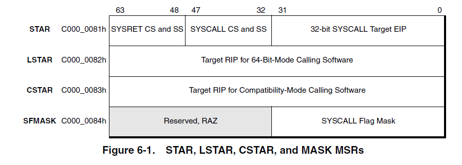
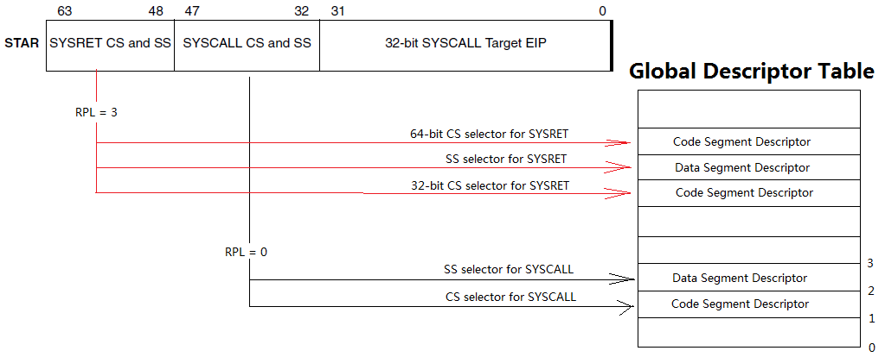

<!doctype html>


  


<html class="theme-next mist use-motion" lang="zh-Hans">
<head>
  <meta charset="UTF-8"/>
<meta http-equiv="X-UA-Compatible" content="IE=edge" />
<meta name="viewport" content="width=device-width, initial-scale=1, maximum-scale=1"/>


<meta http-equiv="Cache-Control" content="no-transform" />
<meta http-equiv="Cache-Control" content="no-siteapp" />


  <meta name="google-site-verification" content="google15310e762694357f.html" />


  
  
  <link href="/StaticBlog/lib/fancybox/source/jquery.fancybox.css?v=2.1.5" rel="stylesheet" type="text/css" />


  
  
  
  

  
    
    
  

  

  

  

  

  
    
    
    <link href="//fonts.googleapis.com/css?family=Lato:300,300italic,400,400italic,700,700italic&subset=latin,latin-ext" rel="stylesheet" type="text/css">
  


<link href="/StaticBlog/lib/font-awesome/css/font-awesome.min.css?v=4.6.2" rel="stylesheet" type="text/css" />

<link href="/StaticBlog/css/main.css?v=5.1.1" rel="stylesheet" type="text/css" />


  <meta name="keywords" content="Windows,Kernel," />


  <link rel="alternate" href="/StaticBlog/rss2.xml" title="MeeSong's Blog" type="application/atom+xml" />


  <link rel="shortcut icon" type="image/x-icon" href="/StaticBlog/uploads/avatar.jpg?v=5.1.1" />


<meta name="description" content="CPU 既可以运行于非特权的”用户空间”, 也可以运行于特权的”系统空间”. CPU 要从系统空间转入用户空间是容易的, 因为运行于系统空间的CPU可以通过一些特权指令改变其运行状态. 但是从用户空间转入系统空间就不容易了, 因为运行于用户空间的 CPU 是不能执行特权指令的. 一般而言,只有下面几种手段可以从用户空间转入系统空间:  中断 (Interrupt): 在开启了中断的情况下,只要有中">
<meta name="keywords" content="Windows,Kernel">
<meta property="og:type" content="article">
<meta property="og:title" content="Windows kernel learning: 2. System Call">
<meta property="og:url" content="https://meesong.github.io/StaticBlog/2017/Windows-kernel-learning/Windows-kernel-learning-2-System-Call/index.html">
<meta property="og:site_name" content="MeeSong&#39;s Blog">
<meta property="og:description" content="CPU 既可以运行于非特权的”用户空间”, 也可以运行于特权的”系统空间”. CPU 要从系统空间转入用户空间是容易的, 因为运行于系统空间的CPU可以通过一些特权指令改变其运行状态. 但是从用户空间转入系统空间就不容易了, 因为运行于用户空间的 CPU 是不能执行特权指令的. 一般而言,只有下面几种手段可以从用户空间转入系统空间:  中断 (Interrupt): 在开启了中断的情况下,只要有中">
<meta property="og:image" content="https://meesong.github.io/StaticBlog/2017/Windows-kernel-learning/Windows-kernel-learning-2-System-Call/syscall_msr.jpg">
<meta property="og:image" content="https://meesong.github.io/StaticBlog/2017/Windows-kernel-learning/Windows-kernel-learning-2-System-Call/syscall_star.jpg">
<meta property="og:image" content="https://meesong.github.io/StaticBlog/2017/Windows-kernel-learning/Windows-kernel-learning-2-System-Call/serivce_dispatch.jpg">
<meta property="og:updated_time" content="2017-05-18T06:29:01.304Z">
<meta name="twitter:card" content="summary">
<meta name="twitter:title" content="Windows kernel learning: 2. System Call">
<meta name="twitter:description" content="CPU 既可以运行于非特权的”用户空间”, 也可以运行于特权的”系统空间”. CPU 要从系统空间转入用户空间是容易的, 因为运行于系统空间的CPU可以通过一些特权指令改变其运行状态. 但是从用户空间转入系统空间就不容易了, 因为运行于用户空间的 CPU 是不能执行特权指令的. 一般而言,只有下面几种手段可以从用户空间转入系统空间:  中断 (Interrupt): 在开启了中断的情况下,只要有中">
<meta name="twitter:image" content="https://meesong.github.io/StaticBlog/2017/Windows-kernel-learning/Windows-kernel-learning-2-System-Call/syscall_msr.jpg">


<script type="text/javascript" id="hexo.configurations">
  var NexT = window.NexT || {};
  var CONFIG = {
    root: '/StaticBlog/',
    scheme: 'Mist',
    sidebar: {"position":"left","display":"hide","offset":12,"offset_float":0,"b2t":false,"scrollpercent":false},
    fancybox: true,
    motion: true,
    duoshuo: {
      userId: '0',
      author: '博主'
    },
    algolia: {
      applicationID: '',
      apiKey: '',
      indexName: '',
      hits: {"per_page":10},
      labels: {"input_placeholder":"Search for Posts","hits_empty":"We didn't find any results for the search: ${query}","hits_stats":"${hits} results found in ${time} ms"}
    }
  };
</script>


  <link rel="canonical" href="https://meesong.github.io/StaticBlog/2017/Windows-kernel-learning/Windows-kernel-learning-2-System-Call/"/>


  <title>Windows kernel learning: 2. System Call | MeeSong's Blog</title>
</head>

<body itemscope itemtype="http://schema.org/WebPage" lang="zh-Hans">

  


<script>
  (function(i,s,o,g,r,a,m){i['GoogleAnalyticsObject']=r;i[r]=i[r]||function(){
            (i[r].q=i[r].q||[]).push(arguments)},i[r].l=1*new Date();a=s.createElement(o),
          m=s.getElementsByTagName(o)[0];a.async=1;a.src=g;m.parentNode.insertBefore(a,m)
  })(window,document,'script','https://www.google-analytics.com/analytics.js','ga');
  ga('create', 'UA-80255644-1', 'auto');
  ga('send', 'pageview');
</script>


  
  
    
  

  <div class="container sidebar-position-left page-post-detail ">
    <div class="headband"></div>

    <header id="header" class="header" itemscope itemtype="http://schema.org/WPHeader">
      <div class="header-inner"><div class="site-brand-wrapper">
  <div class="site-meta ">
    

    <div class="custom-logo-site-title">
      <a href="/StaticBlog/"  class="brand" rel="start">
        <span class="logo-line-before"><i></i></span>
        <span class="site-title">MeeSong's Blog</span>
        <span class="logo-line-after"><i></i></span>
      </a>
    </div>
      
        <p class="site-subtitle">探索有趣的事物~</p>
      
  </div>

  <div class="site-nav-toggle">
    <button>
      <span class="btn-bar"></span>
      <span class="btn-bar"></span>
      <span class="btn-bar"></span>
    </button>
  </div>
</div>

<nav class="site-nav">
  

  
    <ul id="menu" class="menu">
      
        
        <li class="menu-item menu-item-home">
          <a href="/StaticBlog/" rel="section">
            
              <i class="menu-item-icon fa fa-fw fa-home"></i> <br />
            
            首页
          </a>
        </li>
      
        
        <li class="menu-item menu-item-about">
          <a href="/StaticBlog/about" rel="section">
            
              <i class="menu-item-icon fa fa-fw fa-user"></i> <br />
            
            关于
          </a>
        </li>
      
        
        <li class="menu-item menu-item-categories">
          <a href="/StaticBlog/categories" rel="section">
            
              <i class="menu-item-icon fa fa-fw fa-th"></i> <br />
            
            分类
          </a>
        </li>
      
        
        <li class="menu-item menu-item-archives">
          <a href="/StaticBlog/archives" rel="section">
            
              <i class="menu-item-icon fa fa-fw fa-archive"></i> <br />
            
            归档
          </a>
        </li>
      
        
        <li class="menu-item menu-item-tags">
          <a href="/StaticBlog/tags" rel="section">
            
              <i class="menu-item-icon fa fa-fw fa-tags"></i> <br />
            
            标签
          </a>
        </li>
      
        
        <li class="menu-item menu-item-sitemap">
          <a href="/StaticBlog/sitemap.xml" rel="section">
            
              <i class="menu-item-icon fa fa-fw fa-sitemap"></i> <br />
            
            站点地图
          </a>
        </li>
      

      
        <li class="menu-item menu-item-search">
          
            <a href="javascript:;" class="popup-trigger">
          
            
              <i class="menu-item-icon fa fa-search fa-fw"></i> <br />
            
            搜索
          </a>
        </li>
      
    </ul>
  

  
    <div class="site-search">
      
  <div class="popup search-popup local-search-popup">
  <div class="local-search-header clearfix">
    <span class="search-icon">
      <i class="fa fa-search"></i>
    </span>
    <span class="popup-btn-close">
      <i class="fa fa-times-circle"></i>
    </span>
    <div class="local-search-input-wrapper">
      <input autocomplete="off"
             placeholder="搜索..." spellcheck="false"
             type="text" id="local-search-input">
    </div>
  </div>
  <div id="local-search-result"></div>
</div>


    </div>
  
</nav>


 </div>
    </header>

    <main id="main" class="main">
      <div class="main-inner">
        <div class="content-wrap">
          <div id="content" class="content">
            

  <div id="posts" class="posts-expand">
    

  

  
  
  

  <article class="post post-type-normal " itemscope itemtype="http://schema.org/Article">
    <link itemprop="mainEntityOfPage" href="https://meesong.github.io/StaticBlog/StaticBlog/2017/Windows-kernel-learning/Windows-kernel-learning-2-System-Call/">

    <span hidden itemprop="author" itemscope itemtype="http://schema.org/Person">
      <meta itemprop="name" content="MeeSong">
      <meta itemprop="description" content="">
      <meta itemprop="image" content="/StaticBlog/uploads/avatar.jpg">
    </span>

    <span hidden itemprop="publisher" itemscope itemtype="http://schema.org/Organization">
      <meta itemprop="name" content="MeeSong's Blog">
    </span>

    
      <header class="post-header">

        
        
          <h1 class="post-title" itemprop="name headline">Windows kernel learning: 2. System Call</h1>
        

        <div class="post-meta">
          <span class="post-time">
            
              <span class="post-meta-item-icon">
                <i class="fa fa-calendar-o"></i>
              </span>
              
                <span class="post-meta-item-text">发表于</span>
              
              <time title="创建于" itemprop="dateCreated datePublished" datetime="2017-05-12T13:41:43+08:00">
                2017-05-12
              </time>
            

            

            
          </span>

          
            <span class="post-category" >
            
              <span class="post-meta-divider">|</span>
            
              <span class="post-meta-item-icon">
                <i class="fa fa-folder-o"></i>
              </span>
              
                <span class="post-meta-item-text">分类于</span>
              
              
                <span itemprop="about" itemscope itemtype="http://schema.org/Thing">
                  <a href="/StaticBlog/categories/Windows-kernel-learning/" itemprop="url" rel="index">
                    <span itemprop="name">Windows kernel learning</span>
                  </a>
                </span>

                
                
              
            </span>
          

          
            
          

          
          

          
            <span class="post-meta-divider">|</span>
            <span class="page-pv"><i class="fa fa-file-o"></i>
            <span class="busuanzi-value" id="busuanzi_value_page_pv" ></span>
            </span>
          

          

          

        </div>
      </header>
    

    <div class="post-body" itemprop="articleBody">

      
      

      
        <p>CPU 既可以运行于非特权的”用户空间”, 也可以运行于特权的”系统空间”.</p>
<p>CPU 要从系统空间转入用户空间是容易的, 因为运行于系统空间的CPU可以通过一些特权指令改变其运行状态. 但是从用户空间转入系统空间就不容易了, 因为运行于用户空间的 CPU 是不能执行特权指令的.</p>
<p>一般而言,只有下面几种手段可以从用户空间转入系统空间:</p>
<ul>
<li><p>中断 (Interrupt): 在开启了中断的情况下,只要有中断请求到来, CPU 就会自动转入系统空间, 并指定对应的中断例程, 从而为中断请求提供服务. 中断发生在两条指令之间, 所以不会使正在执行的指令半途而废, 中断是无法预知且异步的.</p>
</li>
<li><p>异常 (Exception): 异常和中断极其相似, 只是一行发生在执行一条指令的过程中, 而不是两条指令之间. 实践中, 可以通过故意引起异常而进入内核.</p>
</li>
<li><p>自陷 (Trap): 为了让 CPU 能主动地进入系统空间, 绝大多数 CPU 都设有专门的 “自陷” 指令, 系统调用通常都是通过自陷指令实现的. 自陷指令在形式上也与中断相似,就像是 CPU 主动发出的中断请求.</p>
</li>
<li><p>快速系统调用 (fast call): 可以说是对自陷机制的改进.</p>
</li>
</ul>
<p>这篇笔记主要就是写自陷和快速系统调用机制.</p>
<a id="more"></a>
<h2 id="系统调用机制概述"><a href="#系统调用机制概述" class="headerlink" title="系统调用机制概述"></a>系统调用机制概述</h2><h3 id="自陷指令-int-2eh"><a href="#自陷指令-int-2eh" class="headerlink" title="自陷指令 int 2eh"></a>自陷指令 int 2eh</h3><p>在 Pentium Ⅱ 之前的 x86 处理器上, Windows 使用 <code>int 2eh</code> 自陷指令进入内核实现系统调用. Windows 填充 IDT 的46 号表项, 使其指向系统服务分发器. 使用 EAX 寄存器传递系统服务号, EDX 寄存器指向调用者传递给系统服务的参数列表.</p>
<h3 id="sysenter-sysexit"><a href="#sysenter-sysexit" class="headerlink" title="sysenter/sysexit"></a>sysenter/sysexit</h3><p>在之后, Windows 使用专门的 <code>sysenter</code> 指令, 这是 Intel 特别为快速系统分发而定义的指令, 与此配套, CPU 中增加了三个 MSR (Machine Specific Register) 寄存器: <code>SYSENTER_CS_MSR</code>, <code>SYSENTER_EIP_MSR</code>, <code>SYSENTER_ESP_MSR</code>. </p>
<p>这些寄存器可以通过 <code>wrmsr</code> 指令来设置, 执行 <code>wrmsr</code> 指令时, 通过寄存器 edx, eax 指定设置的值, edx 指定值的高 32 位, eax 指定值的低 32 位, 在设置上述寄存器时, edx 都是 0, 通过寄存器 ecx 指定填充的 MSR 寄存器, <code>SYSENTER_CS_MSR</code>, <code>SYSENTER_ESP_MSR</code>, <code>SYSENTER_EIP_MSR</code> 寄存器分别对应 <code>0x174, 0x175, 0x176</code>, 需要注意的是, <code>wrmsr/rdmsr</code> 指令只能在 Ring 0 执行.</p>
<p>与自陷指令一样, sysenter 使用 EAX 寄存器传递系统服务号, EDX 寄存器指向调用者传递给系统服务的参数列表.</p>
<h3 id="syscall-sysret"><a href="#syscall-sysret" class="headerlink" title="syscall/sysret"></a>syscall/sysret</h3><p>在之后的 x64 体系架构上, Windows 使用 <code>syscall</code> 指令进行系统调用,将系统调用号通过EAX寄存器来传递, 前四个参数放在寄存器中传递, 剩下的参数都被放入栈中.</p>
<p>为了支持 <code>syscall/sysret</code>, AMD 新增了4个 MSR 寄存器:</p>
<ul>
<li>STAR</li>
<li>LSTAR</li>
<li>CSTAR</li>
<li>SFMASK</li>
</ul>
<p><br></p>
<p>通过上图我们已经明白了 STAR 寄存器的用途：</p>
<p>在 <code>legacy x86</code> 下提供 <code>eip</code> 值（仅在 <code>egacy x86</code> 模式下）<br>为 <code>syscall</code> 指令提供目标代码的 <code>CS</code> 和 <code>SS</code> selector<br>为 <code>sysret</code> 指令提供返回代码的 <code>CS</code> 和 <code>SS</code> selector</p>
<p>因此, STAR 寄存器分为三部分：</p>
<ol>
<li>[31:00] - SYSCALL_EIP - legacy 模式的 EIP</li>
<li>[47:32] - SYSCALL_CS</li>
<li>[63:48] - SYSRET_CS</li>
</ol>
<ul>
<li>SYSRET_CS：32-bit code segment descriptor selector (包括 legacy x86 的 16-bit 代码)</li>
<li>SYSRET_CS+8：stack segment descriptor selector</li>
<li>SYSRET_CS+16：64-bit code segment descriptor selector</li>
</ul>
<p>SFMASK 寄存器中的值为1的位,就会在 EFLAGS 寄存器中置零.</p>
<p>在 Intel 下 STSR 被称作 <code>IA32_STAR</code>, LSTAR 被称作 <code>IA32_LSTAR</code>,  SFMASK 被称作 <code>IA32_SFMASK</code>,  虽然是冠以 IA32 体系, 但是请相信它们是 64 位的. 除前面所说的只能在 64 位环境执行, 其它方面完全是兼容 AMD 的. </p>
<p>在 Windows 中, LSTAR 实际指向 KiSystemCall64, CSTAR 指向 KiSystemCall32.</p>
<h3 id="对于-sysenter-和-syscall-的关系"><a href="#对于-sysenter-和-syscall-的关系" class="headerlink" title="对于 sysenter 和 syscall 的关系:"></a>对于 <code>sysenter</code> 和 <code>syscall</code> 的关系:</h3><blockquote>
<p>在 AMD 与 Intel 的 processor 上还是有区别的: </p>
<p>在 AMD 的 processor 上: syscall/sysret 指令在 long mode 和 protected mode ( 指的是 Legacy x86 和 compatibility mode ) 上都是有效的 ( valid ).</p>
<p>在 Intel processor 上: syscall/sysret 指令只能在 64-bit 模式上使用, compatibility 模式和 Legacy x86 模式上都是无效的. 可是 sysret 指令虽然不能在 compatibility 模式下执行, 但 sysret 却可以返回到 compaitibility 模式. 这一点只能是认为了兼容 AMD 的 sysret 指令. </p>
<p>怎么办, 这会不会出现兼容上的问题? 这里有一个折衷的处理办法: </p>
<p>在 64 位环境里统一使用 syscall/sysret 指令, 在 32 位环境里统一使用 sysenter/sysexit 指令</p>
<p>然而依旧会产生一些令人不愉快的顾虑, 没错, 在 compatibility 模式下谁都不兼容谁:</p>
<p>Intel 的 syscall/sysret 指令不能在 compatibility 模式下执行; AMD 的 sysenter/sysexit 指令也不能在 compatibility 模式下执行.</p>
<p>因此: 在 compatibility 模式下必须切换到 64 位模式, 然后使用 syscall/sysret 指令</p>
<p>详见: <a href="http://www.mouseos.com/arch/syscall_sysret.html" target="_blank" rel="external">mik-使用 syscall/sysret 指令</a></p>
</blockquote>
<h2 id="系统调用机制的切换过程"><a href="#系统调用机制的切换过程" class="headerlink" title="系统调用机制的切换过程"></a>系统调用机制的切换过程</h2><h3 id="int-2eh-指令"><a href="#int-2eh-指令" class="headerlink" title="int 2eh 指令"></a><code>int 2eh</code> 指令</h3><p>CPU 的运行状态从用户态切换成内核态. 从任务状态段 TSS 中装入本线程的内核栈寄存器 SS 和 ESP, 再保存现场, 依次 PUSH SS, ESP, EFLAGS, CS, EIP, 然后执行 IDT[0x2e] 中的系统服务分发器开始执行内核中的程序. 最后系统调用返回则通过中断返回指令 <code>iret</code> 实现上述的逆过程.</p>
<h3 id="sysenter-sysexit-指令"><a href="#sysenter-sysexit-指令" class="headerlink" title="sysenter/sysexit 指令"></a><code>sysenter/sysexit</code> 指令</h3><p>在 Ring3 的代码调用了 <code>sysenter</code> 指令之后, CPU 会做出如下的操作：</p>
<ol>
<li>将 <code>SYSENTER_CS_MSR</code> 的值装载到 cs 寄存器</li>
<li>将 <code>SYSENTER_EIP_MSR</code> 的值装载到 eip 寄存器</li>
<li>将 <code>SYSENTER_CS_MSR</code> 的值加 8（Ring0 的堆栈段描述符）装载到 ss 寄存器. </li>
<li>将 <code>SYSENTER_ESP_MSR</code> 的值装载到 esp 寄存器</li>
<li>将特权级切换到 Ring0</li>
<li>如果 EFLAGS 寄存器的 VM 标志被置位, 则清除该标志</li>
<li>开始执行指定的 Ring0 代码</li>
</ol>
<p>在 Ring0 代码执行完毕, 调用 <code>SYSEXIT</code> 指令退回 Ring3 时, CPU 会做出如下操作：</p>
<ol>
<li>将 <code>SYSENTER_CS_MSR</code> 的值加 16（Ring3 的代码段描述符）装载到 cs 寄存器</li>
<li>将寄存器 edx 的值装载到 eip 寄存器</li>
<li>将 <code>SYSENTER_CS_MSR</code> 的值加 24（Ring3 的堆栈段描述符）装载到 ss 寄存器</li>
<li>将寄存器 ecx 的值装载到 esp 寄存器</li>
<li>将特权级切换到 Ring3</li>
<li>继续执行 Ring3 的代码</li>
</ol>
<h3 id="syscall-sysret-指令"><a href="#syscall-sysret-指令" class="headerlink" title="syscall/sysret 指令"></a><code>syscall/sysret</code> 指令</h3><p>用伪代码来表示</p>
<figure class="highlight cpp"><table><tr><td class="gutter"><pre><div class="line">1</div><div class="line">2</div><div class="line">3</div><div class="line">4</div><div class="line">5</div><div class="line">6</div><div class="line">7</div><div class="line">8</div><div class="line">9</div><div class="line">10</div><div class="line">11</div><div class="line">12</div><div class="line">13</div><div class="line">14</div><div class="line">15</div><div class="line">16</div><div class="line">17</div><div class="line">18</div><div class="line">19</div><div class="line">20</div><div class="line">21</div><div class="line">22</div><div class="line">23</div><div class="line">24</div><div class="line">25</div><div class="line">26</div><div class="line">27</div><div class="line">28</div><div class="line">29</div><div class="line">30</div><div class="line">31</div><div class="line">32</div><div class="line">33</div><div class="line">34</div><div class="line">35</div><div class="line">36</div><div class="line">37</div><div class="line">38</div><div class="line">39</div><div class="line">40</div><div class="line">41</div><div class="line">42</div><div class="line">43</div><div class="line">44</div><div class="line">45</div><div class="line">46</div><div class="line">47</div><div class="line">48</div><div class="line">49</div><div class="line">50</div><div class="line">51</div><div class="line">52</div><div class="line">53</div><div class="line">54</div><div class="line">55</div><div class="line">56</div><div class="line">57</div><div class="line">58</div><div class="line">59</div><div class="line">60</div><div class="line">61</div><div class="line">62</div><div class="line">63</div><div class="line">64</div><div class="line">65</div><div class="line">66</div><div class="line">67</div><div class="line">68</div><div class="line">69</div><div class="line">70</div><div class="line">71</div><div class="line">72</div><div class="line">73</div><div class="line">74</div><div class="line">75</div><div class="line">76</div><div class="line">77</div><div class="line">78</div><div class="line">79</div><div class="line">80</div><div class="line">81</div><div class="line">82</div><div class="line">83</div><div class="line">84</div><div class="line">85</div><div class="line">86</div><div class="line">87</div><div class="line">88</div><div class="line">89</div><div class="line">90</div><div class="line">91</div><div class="line">92</div><div class="line">93</div></pre></td><td class="code"><pre><div class="line">MSR_EFER EFER;</div><div class="line">MSR_STAR STAR;</div><div class="line">MSR_LSTAR LSTAR;</div><div class="line">MSR_CSTAR CSTAR;</div><div class="line">MSR_SFMASK SFMASK;</div><div class="line"></div><div class="line"><span class="function"><span class="keyword">void</span> <span class="title">syscall</span><span class="params">()</span></span></div><div class="line">&#123;</div><div class="line">    <span class="keyword">if</span> (EFER.SCE == <span class="number">0</span>)        <span class="comment">/* system call extensions is disable */</span></div><div class="line">        do_exception_UD();    <span class="comment">/* #UD exception */</span></div><div class="line">       </div><div class="line"></div><div class="line">    <span class="keyword">if</span> (EFER.LMA == <span class="number">1</span>) &#123;      <span class="comment">/* long mode is active */</span></div><div class="line">        rcx = rip;            <span class="comment">/* save rip for syscall return */</span></div><div class="line">        r11 = rflags;         <span class="comment">/* save rflags to r11 */</span></div><div class="line"></div><div class="line">        <span class="comment">/*</span></div><div class="line">         * CS.L == 1 for 64-bit mode, rip from MSR_LSTAR</div><div class="line">         * CS.L == 0 for compatibility, rip from MSR_CSTAR</div><div class="line">         */</div><div class="line">        rip = CS.attribute.L ? LSTAR : CSTAR;</div><div class="line"></div><div class="line">        <span class="comment">/*</span></div><div class="line">         * processor set CS register </div><div class="line">         */       </div><div class="line">        CS.selector = STAR.SYSCALL_CS;       <span class="comment">/* load selector from MSR_STAR.SYSCALL_CS */</span></div><div class="line">        CS.selector.RPL = <span class="number">0</span>;                 <span class="comment">/* RPL = 0 */</span></div><div class="line">        CS.attribute.S = <span class="number">1</span>;                  <span class="comment">/* user segment descriptor */</span></div><div class="line">        CS.attribute.C_D = <span class="number">1</span>;                <span class="comment">/* code segment */</span></div><div class="line">        CS.attribute.L = <span class="number">1</span>;                  <span class="comment">/* 64-bit */</span></div><div class="line">        CS.attribute.D = <span class="number">0</span>;                  <span class="comment">/* 64-bit */</span></div><div class="line">        CS.attribute.DPL = <span class="number">0</span>;                <span class="comment">/* CPL = 0 */</span>                   </div><div class="line">        CS.attribute.P = <span class="number">1</span>;                  <span class="comment">/* present = 1 */</span></div><div class="line">        CS.base = <span class="number">0</span>;</div><div class="line">        CS.limit = <span class="number">0xFFFFFFFF</span>;</div><div class="line"></div><div class="line">        <span class="comment">/*</span></div><div class="line">         * processor set SS register</div><div class="line">         */</div><div class="line">         SS.selector = STAR.SYSCALL_CS + <span class="number">8</span>;</div><div class="line">         SS.attribute.S = <span class="number">1</span>;</div><div class="line">         SS.attribute.C_D = <span class="number">0</span>;</div><div class="line">         SS.attribute.P = <span class="number">1</span>;</div><div class="line">         SS.attribute.DPL = <span class="number">0</span>;</div><div class="line">         SS.base = <span class="number">0</span>;</div><div class="line">         SS.limit = <span class="number">0xFFFFFFFF</span>;</div><div class="line"></div><div class="line">         <span class="comment">/* set rflags */</span></div><div class="line">         rflags = rflags &amp; ~ SFMASK;</div><div class="line">         rflags.RF = <span class="number">0</span>;</div><div class="line"></div><div class="line">         <span class="comment">/* goto rip ... */</span></div><div class="line"></div><div class="line"></div><div class="line">    &#125; <span class="keyword">else</span> &#123;</div><div class="line">        <span class="comment">/* legacy mode */</span></div><div class="line"></div><div class="line">        rcx = (<span class="keyword">unsigned</span> <span class="keyword">long</span> <span class="keyword">long</span>)eip;            <span class="comment">/* eip extend to 64 load into rcx */</span></div><div class="line">        rip = (<span class="keyword">unsigned</span> <span class="keyword">long</span> <span class="keyword">long</span>)STAR.EIP;       <span class="comment">/* get eip from MSR_STAR.EIP */</span></div><div class="line">       </div><div class="line">        CS.selector = STAR.SYSCALL_CS;</div><div class="line">        CS.selector.RPL = <span class="number">0</span>;</div><div class="line">        CS.attribute.S = <span class="number">1</span>;                  <span class="comment">/* user descriptor */</span></div><div class="line">        CS.attribute.C_D = <span class="number">1</span>;                <span class="comment">/* code segment */</span></div><div class="line">        CS.attribute.D = <span class="number">1</span>;                  <span class="comment">/* 32-bit */</span></div><div class="line">        CS.attribute.C = <span class="number">0</span>;                  <span class="comment">/* non-conforming */</span></div><div class="line">        CS.attribute.R = <span class="number">1</span>;                  <span class="comment">/* read/execute */</span></div><div class="line">        CS.attribute.DPL = <span class="number">0</span>;                <span class="comment">/* CPL = 0 */</span>                   </div><div class="line">        CS.attribute.P = <span class="number">1</span>;                  <span class="comment">/* present = 1 */</span></div><div class="line">        CS.attribute.G = <span class="number">1</span>;                  <span class="comment">/* G = 1 */</span></div><div class="line">        CS.base = <span class="number">0</span>;</div><div class="line">        CS.limit = <span class="number">0xFFFFFFFF</span>;                     </div><div class="line"></div><div class="line">        SS.selector = STAR.SYSCALL_CS + <span class="number">8</span>;</div><div class="line">        SS.attribute.S = <span class="number">1</span>;                 <span class="comment">/* user descriptor */</span></div><div class="line">        SS.attribute.C_D = <span class="number">0</span>;               <span class="comment">/* data segment */</span></div><div class="line">        SS.attribute.D = <span class="number">1</span>;                 <span class="comment">/* 32-bit esp */</span></div><div class="line">        SS.attribute.E = <span class="number">0</span>;                 <span class="comment">/* expand-up */</span></div><div class="line">        SS.attribute.W = <span class="number">1</span>;                 <span class="comment">/* read/write */</span></div><div class="line">        SS.attribute.P = <span class="number">1</span>;                 <span class="comment">/* present */</span></div><div class="line">        SS.attribute.DPL = <span class="number">0</span>;               <span class="comment">/* DPL = 0 */</span></div><div class="line">        SS.attribute.G = <span class="number">1</span>;                 <span class="comment">/* G = 1 */</span></div><div class="line">        SS.base = <span class="number">0</span>;</div><div class="line">        SS.limit = <span class="number">0xFFFFFFFF</span>;</div><div class="line"></div><div class="line">        rflags.VM = <span class="number">0</span>;</div><div class="line">        rflags.IF = <span class="number">0</span>;</div><div class="line">        rflags.RF = <span class="number">0</span>;</div><div class="line"></div><div class="line">        <span class="comment">/* goto rip */</span></div><div class="line">    &#125;</div><div class="line"></div><div class="line">&#125;</div></pre></td></tr></table></figure>
<figure class="highlight cpp"><table><tr><td class="gutter"><pre><div class="line">1</div><div class="line">2</div><div class="line">3</div><div class="line">4</div><div class="line">5</div><div class="line">6</div><div class="line">7</div><div class="line">8</div><div class="line">9</div><div class="line">10</div><div class="line">11</div><div class="line">12</div><div class="line">13</div><div class="line">14</div><div class="line">15</div><div class="line">16</div><div class="line">17</div><div class="line">18</div><div class="line">19</div><div class="line">20</div><div class="line">21</div><div class="line">22</div><div class="line">23</div><div class="line">24</div><div class="line">25</div><div class="line">26</div><div class="line">27</div><div class="line">28</div><div class="line">29</div><div class="line">30</div><div class="line">31</div><div class="line">32</div><div class="line">33</div><div class="line">34</div><div class="line">35</div><div class="line">36</div><div class="line">37</div><div class="line">38</div><div class="line">39</div><div class="line">40</div><div class="line">41</div><div class="line">42</div><div class="line">43</div><div class="line">44</div><div class="line">45</div><div class="line">46</div><div class="line">47</div><div class="line">48</div><div class="line">49</div><div class="line">50</div><div class="line">51</div><div class="line">52</div><div class="line">53</div><div class="line">54</div><div class="line">55</div><div class="line">56</div><div class="line">57</div><div class="line">58</div><div class="line">59</div><div class="line">60</div><div class="line">61</div><div class="line">62</div><div class="line">63</div><div class="line">64</div><div class="line">65</div><div class="line">66</div><div class="line">67</div><div class="line">68</div><div class="line">69</div><div class="line">70</div></pre></td><td class="code"><pre><div class="line"><span class="function"><span class="keyword">void</span> <span class="title">sysret</span><span class="params">()</span></span></div><div class="line">&#123;</div><div class="line">    <span class="keyword">if</span> (EFER.SCE == <span class="number">0</span>)                          <span class="comment">/* System Call Extension is disable */</span></div><div class="line">        do_exception_UD();</div><div class="line"></div><div class="line">    <span class="keyword">if</span> (CR0.PE == <span class="number">0</span> || CS.attribute.DPL != <span class="number">0</span>)   <span class="comment">/* protected mode is disable or CPL != 0 */</span></div><div class="line">        do_exception_GP();    </div><div class="line"></div><div class="line">    <span class="keyword">if</span> (CS.attribute.L == <span class="number">1</span>)                    <span class="comment">/* 64-bit mode */</span></div><div class="line">    &#123;   </div><div class="line">        <span class="keyword">if</span> (REX.W == <span class="number">1</span>)                         <span class="comment">/* 64-bit operand size */</span></div><div class="line">        &#123;</div><div class="line">             <span class="comment">/* </span></div><div class="line">              * return to 64-bit code !</div><div class="line">              */</div><div class="line">             CS.selector = STAR.SYSRET_CS + <span class="number">16</span>; <span class="comment">/* 64-bit code segment selector */</span></div><div class="line">             CS.selector.RPL = <span class="number">3</span>;               <span class="comment">/* CPL = 3 */</span></div><div class="line">             CS.attribute.L = <span class="number">1</span>;</div><div class="line">             CS.attribute.D = <span class="number">0</span>;</div><div class="line">             CS.attribute.P = <span class="number">1</span>;</div><div class="line">             CS.attribute.DPL = <span class="number">3</span>;</div><div class="line">             CS.base = <span class="number">0</span>;</div><div class="line">             CS.limit = <span class="number">0xFFFFFFFF</span>;</div><div class="line">           </div><div class="line">             rip = rcx;                     <span class="comment">/* restore rip for return */</span></div><div class="line"></div><div class="line">        &#125; <span class="keyword">else</span> &#123;</div><div class="line">             <span class="comment">/*</span></div><div class="line">              * return to compatibility !</div><div class="line">              */</div><div class="line">             CS.selector = STAR.SYSRET_CS;  <span class="comment">/* 32-bit code segment selector */</span></div><div class="line">             CS.selector.RPL = <span class="number">3</span>;</div><div class="line">             CS.attribute.L = <span class="number">0</span>;            <span class="comment">/* compatibility mode */</span></div><div class="line">             CS.attribute.D = <span class="number">1</span>;            <span class="comment">/* 32-bit code */</span></div><div class="line">             CS.attribute.P = <span class="number">1</span>;</div><div class="line">             CS.attribute.C = <span class="number">0</span>;</div><div class="line">             CS.attribute.R = <span class="number">1</span>;</div><div class="line">             CS.attribute.DPL = <span class="number">3</span>;</div><div class="line">             CS.base = <span class="number">0</span>;</div><div class="line">             CS.limit = <span class="number">0xFFFFFFFF</span>; </div><div class="line"></div><div class="line">             rip = (<span class="keyword">unsigned</span> <span class="keyword">long</span> <span class="keyword">long</span>)ecx;              </div><div class="line">        &#125;</div><div class="line">        </div><div class="line">        SS.selector = START.SYSRET_CS + <span class="number">8</span>;  <span class="comment">/* SS selector for return */</span></div><div class="line">        rflags = r11;                       <span class="comment">/* restore rflags */</span></div><div class="line"></div><div class="line">        <span class="comment">/* goto rip */</span></div><div class="line"></div><div class="line">    &#125; <span class="keyword">else</span> &#123;                                <span class="comment">/* compatibility or legacy mode */</span></div><div class="line"></div><div class="line">         CS.selector = STAR.SYSRET_CS;      <span class="comment">/* 32-bit code segment selector */</span></div><div class="line">         CS.selector.RPL = <span class="number">3</span></div><div class="line">         CS.attribute.L = <span class="number">0</span>;                <span class="comment">/* compatibility mode */</span></div><div class="line">         CS.attribute.D = <span class="number">1</span>;                <span class="comment">/* 32-bit code */</span></div><div class="line">         CS.attribute.P = <span class="number">1</span>;</div><div class="line">         CS.attribute.C = <span class="number">0</span>;</div><div class="line">         CS.attribute.R = <span class="number">1</span>;</div><div class="line">         CS.attribute.DPL = <span class="number">3</span>;</div><div class="line">         CS.base = <span class="number">0</span>;</div><div class="line">         CS.limit = <span class="number">0xFFFFFFFF</span>; </div><div class="line"></div><div class="line">         SS.selector = STAR.SYSRET_CS + <span class="number">8</span>;</div><div class="line"></div><div class="line">         rflags.IF = <span class="number">1</span>;</div><div class="line"></div><div class="line">         rip = (<span class="keyword">unsigned</span> <span class="keyword">long</span> <span class="keyword">long</span>)ecx;</div><div class="line">    &#125;</div><div class="line"></div><div class="line">&#125;</div></pre></td></tr></table></figure>
<h2 id="System-Service-Descriptor-Table-SSDT-amp-Shadow-SSDT"><a href="#System-Service-Descriptor-Table-SSDT-amp-Shadow-SSDT" class="headerlink" title="System Service Descriptor Table (SSDT) &amp; Shadow SSDT"></a>System Service Descriptor Table (SSDT) &amp; Shadow SSDT</h2><p>现在我们知道, Ring3 通过 <code>syscall</code> 进行系统调用到 Ring0, 那么 <code>syscall</code> 是怎么找到对应的内核服务函数的呢? 就是通过 SSDT 和 Shadow SSDT 这两张表来找到的.</p>
<p>SSDT 的全称是 System Services Descriptor Table, 系统服务描述符表. 这个表就是一个把 Ring3 的 Win32 API 和 Ring0 的内核 API 联系起来. SSDT 并不仅仅只包含一个庞大的地址索引表, 它还包含着一些其它有用的信息, 诸如地址索引的基地址, 服务函数个数等. 通过修改此表的函数地址可以对常用Windows 函数及 API 进行 Hook, 从而实现对一些关心的系统动作进行过滤, 监控的目的. 一些 HIPS, 防毒软件, 系统监控, 注册表监控软件往往会采用此接口来实现自己的监控模块. </p>
<p>例如, Windows API OpenProcess是从Kernel32导出的, 所以调用首先转到了Kernel32的OpenProcess函数. 在OpenProcess中又调用了ntdll!NtOpenProcess函数. 然后通过快速系统调用进入内核, 根据传进来的索引在SSDT中得到函数的地址, 然后调用函数. </p>
<p>在 NT 4.0 以上的 Windows 操作系统中, 默认就存在两个系统服务描述表, 这两个调度表对应了两类不同的系统服务, 这两个调度表为：KeServiceDescriptorTable 和 KeServiceDescriptorTableShadow, 其中 KeServiceDescriptorTable 主要是处理来自 Ring3 层得 Kernel32.dll中的系统调用, 而 KeServiceDescriptorTableShadow 则主要处理来自 User32.dll 和 GDI32.dll 以及 Win32u.dll 中的系统调用, 并且 KeServiceDescriptorTable 在ntoskrnl.exe(Windows 操作系统内核文件, 包括内核和执行体层)是导出的, 而 KeServiceDescriptorTableShadow 则是没有被 Windows 操作系统所导出, 而关于 SSDT 的全部内容则都是通过 KeServiceDescriptorTable 来完成的 ~</p>
<p>ntoskrnl.exe中的一个导出项 KeServiceDescriptorTable 即是SSDT的真身, 亦即它在内核中的数据实体. SSDT的数 据结构定义如下: </p>
<figure class="highlight c"><table><tr><td class="gutter"><pre><div class="line">1</div><div class="line">2</div><div class="line">3</div><div class="line">4</div><div class="line">5</div><div class="line">6</div><div class="line">7</div><div class="line">8</div><div class="line">9</div><div class="line">10</div><div class="line">11</div><div class="line">12</div><div class="line">13</div><div class="line">14</div><div class="line">15</div></pre></td><td class="code"><pre><div class="line"><span class="keyword">typedef</span> <span class="class"><span class="keyword">struct</span> _<span class="title">KSYSTEM_SERVICE_TABLE</span></span></div><div class="line">&#123;</div><div class="line">    PULONG  ServiceTableBase;                               <span class="comment">// SSDT (System Service Dispatch Table)的基地址</span></div><div class="line">    PULONG  ServiceCounterTableBase;                        <span class="comment">// 用于 checked builds, 包含 SSDT 中每个服务被调用的次数</span></div><div class="line">    ULONG   NumberOfService;                                <span class="comment">// 服务函数的个数, NumberOfService * 4 就是整个地址表的大小</span></div><div class="line">    ULONG   ParamTableBase;                                 <span class="comment">// SSPT(System Service Parameter Table)的基地址, 该表格包含了每个服务所需的参数字节数</span></div><div class="line">&#125; KSYSTEM_SERVICE_TABLE, *PKSYSTEM_SERVICE_TABLE;</div><div class="line"></div><div class="line"><span class="keyword">typedef</span> <span class="class"><span class="keyword">struct</span> _<span class="title">KSERVICE_TABLE_DESCRIPTOR</span></span></div><div class="line">&#123;</div><div class="line">    KSYSTEM_SERVICE_TABLE   ntoskrnl;                       <span class="comment">// ntoskrnl.exe 的服务函数</span></div><div class="line">    KSYSTEM_SERVICE_TABLE   win32k;                         <span class="comment">// win32k.sys 的服务函数(GDI32.dll/User32.dll 的内核支持)</span></div><div class="line">    KSYSTEM_SERVICE_TABLE   notUsed1;</div><div class="line">    KSYSTEM_SERVICE_TABLE   notUsed2;</div><div class="line">&#125;KSERVICE_TABLE_DESCRIPTOR, *PKSERVICE_TABLE_DESCRIPTOR;</div></pre></td></tr></table></figure>
<p>然而, x86 与 x64 有些许差别, x86 中 ServiceTableBase 存储的就是系统服务函数地址.<br>而 x64 中 ServiceTableBase 存储的是相对于ServiceTableBase的系统服务函数的偏移, 同样使用4字节表示一项.<br>由于函数的起始地址最低四位都是0, 所以微软将 SSDT 中的低四位用来记录这个函数有多少个参数需要在<strong>栈</strong>中传递, 即 <code>ArgumentCount - 4</code> (RCX, RDX, R8, R9).</p>
<p>那么根据 KiSystemServiceStart 函数可得到算法:</p>
<figure class="highlight c"><table><tr><td class="gutter"><pre><div class="line">1</div><div class="line">2</div><div class="line">3</div></pre></td><td class="code"><pre><div class="line">x86: Address = ServiceTableBase + (SystemCallNumber * <span class="number">4</span>)</div><div class="line"></div><div class="line">x64: Address = ServiceTableBase + (((<span class="keyword">int</span>*)(ServiceTableBase + (SystemCallNumber &amp; <span class="number">0x0FFF</span>) * <span class="number">4</span>))[<span class="number">0</span>] &gt;&gt; <span class="number">4</span>)</div></pre></td></tr></table></figure>
<h2 id="拿个栗子说事儿"><a href="#拿个栗子说事儿" class="headerlink" title="拿个栗子说事儿"></a>拿个栗子说事儿</h2><h3 id="Windows-8-1-x64-syscall-sysret"><a href="#Windows-8-1-x64-syscall-sysret" class="headerlink" title="Windows 8.1 x64, syscall/sysret"></a>Windows 8.1 x64, syscall/sysret</h3><p>首先我们来看下 <code>syscall/sysret</code> 相关的几个寄存器</p>
<figure class="highlight plain"><table><tr><td class="gutter"><pre><div class="line">1</div><div class="line">2</div><div class="line">3</div><div class="line">4</div><div class="line">5</div><div class="line">6</div><div class="line">7</div><div class="line">8</div><div class="line">9</div><div class="line">10</div><div class="line">11</div><div class="line">12</div><div class="line">13</div><div class="line">14</div><div class="line">15</div><div class="line">16</div><div class="line">17</div><div class="line">18</div><div class="line">19</div><div class="line">20</div><div class="line">21</div><div class="line">22</div></pre></td><td class="code"><pre><div class="line">1: kd&gt; rdmsr c0000081</div><div class="line">msr[c0000081] = 00230010`00000000</div><div class="line">1: kd&gt; rdmsr c0000082</div><div class="line">msr[c0000082] = fffff800`2a492200</div><div class="line">1: kd&gt; ln fffff800`2a492200</div><div class="line">Browse module</div><div class="line">Set bu breakpoint</div><div class="line"></div><div class="line">(fffff800`2a492200)   nt!KiSystemCall64   |  (fffff800`2a492348)   nt!KiSystemServiceStart</div><div class="line">Exact matches:</div><div class="line">    nt!KiSystemCall64 (&lt;no parameter info&gt;)</div><div class="line">1: kd&gt; rdmsr c0000083</div><div class="line">msr[c0000083] = fffff800`2a491f40</div><div class="line">1: kd&gt; ln fffff800`2a491f40</div><div class="line">Browse module</div><div class="line">Set bu breakpoint</div><div class="line"></div><div class="line">(fffff800`2a491f40)   nt!KiSystemCall32   |  (fffff800`2a492080)   nt!KiSystemServiceHandler</div><div class="line">Exact matches:</div><div class="line">    nt!KiSystemCall32 (&lt;no parameter info&gt;)</div><div class="line">1: kd&gt; rdmsr c0000084</div><div class="line">msr[c0000084] = 00000000`00004700</div></pre></td></tr></table></figure>
<p>首先看一下 STAR 寄存器. 通过 <code>rdmsr c0000081</code> 得到 <code>0023001000000000</code>, 根据 STAR 的结构得知:</p>
<ul>
<li>sysret  CS        : 0023</li>
<li>sysret  SS        : 002B ; CS + 8</li>
<li>sysret  CS 64bit  : 0033 ; CS + 16</li>
<li>syscall CS        : 0010 </li>
<li>syscall SS        : 0018 ; CS + 8</li>
<li>syscall 32bit EIP : 00000000</li>
</ul>
<p>我们通过分别对 ntdll!NtCreateFile 和 nt!NtCreateFile 下断点来验证一下:</p>
<figure class="highlight x86asm"><table><tr><td class="gutter"><pre><div class="line">1</div><div class="line">2</div><div class="line">3</div><div class="line">4</div><div class="line">5</div><div class="line">6</div><div class="line">7</div><div class="line">8</div><div class="line">9</div><div class="line">10</div><div class="line">11</div><div class="line">12</div><div class="line">13</div><div class="line">14</div><div class="line">15</div><div class="line">16</div><div class="line">17</div><div class="line">18</div><div class="line">19</div><div class="line">20</div><div class="line">21</div><div class="line">22</div><div class="line">23</div><div class="line">24</div><div class="line">25</div><div class="line">26</div><div class="line">27</div><div class="line">28</div><div class="line">29</div></pre></td><td class="code"><pre><div class="line">Breakpoint <span class="number">1</span> hit</div><div class="line">ntdll!NtCreateFile:</div><div class="line"><span class="number">0033</span>:00007ff8<span class="string">`8d282670 48894c2408      mov     qword ptr [rsp+8],rcx</span></div><div class="line">1: kd&gt; r</div><div class="line">rax=0000000000000000 rbx=000000000eb94a60 rcx=000000001128eb80</div><div class="line">rdx=0000000000100001 rsi=00000000133ea660 rdi=00007ff875680088</div><div class="line">rip=00007ff88d282670 rsp=000000001128eb08 rbp=000000001128eba9</div><div class="line"> r8=000000001128eba8  r9=000000001128ebe0 r10=00000000133e6050</div><div class="line">r11=00000000133ea668 r12=0000000000000001 r13=00007ff875680088</div><div class="line">r14=0000000000000000 r15=000000000eb58e90</div><div class="line">iopl=0         nv up ei pl zr na po nc</div><div class="line">cs=0033  ss=002b  ds=002b  es=002b  fs=0053  gs=002b             efl=00000246</div><div class="line">ntdll!NtCreateFile:</div><div class="line">0033:00007ff8`8d282670 48894c2408      <span class="keyword">mov</span>     <span class="built_in">qword</span> <span class="built_in">ptr</span> [<span class="built_in">rsp</span>+<span class="number">8</span>],<span class="built_in">rcx</span> <span class="built_in">ss</span>:002b:<span class="number">00000000</span><span class="string">`1128eb10=000000000eb94a60</span></div><div class="line">1: kd&gt; g</div><div class="line">Breakpoint 2 hit</div><div class="line">nt!NtCreateFile:</div><div class="line">fffff802`2b5f8784 488bc4          <span class="keyword">mov</span>     <span class="built_in">rax</span>,<span class="built_in">rsp</span></div><div class="line"><span class="number">1</span>: kd&gt; r</div><div class="line"><span class="built_in">rax</span>=<span class="number">0000000000000000</span> <span class="built_in">rbx</span>=ffffe0000883e080 <span class="built_in">rcx</span>=000000001128eb80</div><div class="line"><span class="built_in">rdx</span>=<span class="number">0000000000100001</span> <span class="built_in">rsi</span>=000000001128eb28 <span class="built_in">rdi</span>=ffffd00026fb2aa8</div><div class="line"><span class="built_in">rip</span>=fffff8022b5f8784 <span class="built_in">rsp</span>=ffffd00026fb2a88 <span class="built_in">rbp</span>=ffffd00026fb2b80</div><div class="line"> <span class="built_in">r8</span>=000000001128eba8  <span class="built_in">r9</span>=000000001128ebe0 <span class="built_in">r10</span>=fffff8022b5f8784</div><div class="line"><span class="built_in">r11</span>=fffff8022af1a478 <span class="built_in">r12</span>=<span class="number">0000000000000001</span> <span class="built_in">r13</span>=00007ff875680088</div><div class="line"><span class="built_in">r14</span>=<span class="number">0000000000000000</span> <span class="built_in">r15</span>=000000000eb58e90</div><div class="line">iopl=<span class="number">0</span>         nv <span class="meta">up</span> ei pl zr na po nc</div><div class="line"><span class="built_in">cs</span>=<span class="number">0010</span>  <span class="built_in">ss</span>=<span class="number">0018</span>  <span class="built_in">ds</span>=002b  <span class="built_in">es</span>=002b  <span class="built_in">fs</span>=<span class="number">0053</span>  <span class="built_in">gs</span>=002b             efl=<span class="number">00000246</span></div><div class="line">nt!NtCreateFile:</div><div class="line">fffff802<span class="string">`2b5f8784 488bc4          mov     rax,rsp</span></div></pre></td></tr></table></figure>
<p>可以看到<br>ntdll!NtCreateFile 的 CS, SS 寄存器的值分别对应 sysret 的 CS 64it, SS.<br>nt!NtCreateFile 的 CS, SS 寄存器的值分别对应 syscall 的 CS, SS.</p>
<p>接下来, 我们来看看 syscall 是如何从 Ring3 切换到 Ring0 的.<br>我们来看下 LSTAR 指向的函数, 即 nt!KiSystemCall64 :</p>
<p>不知道什么原因, 我只要对这个函数下断点就会导致 VMWare 虚拟机显示CPU异常而退出…<br>所以我们直接用 IDA 看代码</p>
<h4 id="KiSystemCall64"><a href="#KiSystemCall64" class="headerlink" title="KiSystemCall64"></a>KiSystemCall64</h4><figure class="highlight x86asm"><table><tr><td class="gutter"><pre><div class="line">1</div><div class="line">2</div><div class="line">3</div><div class="line">4</div><div class="line">5</div><div class="line">6</div><div class="line">7</div><div class="line">8</div><div class="line">9</div><div class="line">10</div><div class="line">11</div><div class="line">12</div><div class="line">13</div><div class="line">14</div><div class="line">15</div><div class="line">16</div><div class="line">17</div><div class="line">18</div><div class="line">19</div><div class="line">20</div><div class="line">21</div><div class="line">22</div><div class="line">23</div><div class="line">24</div><div class="line">25</div><div class="line">26</div><div class="line">27</div><div class="line">28</div><div class="line">29</div><div class="line">30</div><div class="line">31</div><div class="line">32</div><div class="line">33</div><div class="line">34</div><div class="line">35</div><div class="line">36</div><div class="line">37</div><div class="line">38</div><div class="line">39</div><div class="line">40</div><div class="line">41</div><div class="line">42</div><div class="line">43</div><div class="line">44</div><div class="line">45</div><div class="line">46</div><div class="line">47</div><div class="line">48</div><div class="line">49</div><div class="line">50</div><div class="line">51</div><div class="line">52</div><div class="line">53</div><div class="line">54</div><div class="line">55</div><div class="line">56</div><div class="line">57</div><div class="line">58</div><div class="line">59</div><div class="line">60</div><div class="line">61</div><div class="line">62</div><div class="line">63</div><div class="line">64</div><div class="line">65</div><div class="line">66</div><div class="line">67</div><div class="line">68</div><div class="line">69</div><div class="line">70</div><div class="line">71</div><div class="line">72</div><div class="line">73</div><div class="line">74</div><div class="line">75</div><div class="line">76</div><div class="line">77</div><div class="line">78</div><div class="line">79</div><div class="line">80</div><div class="line">81</div><div class="line">82</div><div class="line">83</div><div class="line">84</div><div class="line">85</div><div class="line">86</div><div class="line">87</div><div class="line">88</div><div class="line">89</div><div class="line">90</div><div class="line">91</div><div class="line">92</div><div class="line">93</div><div class="line">94</div><div class="line">95</div><div class="line">96</div><div class="line">97</div><div class="line">98</div><div class="line">99</div><div class="line">100</div><div class="line">101</div><div class="line">102</div><div class="line">103</div><div class="line">104</div><div class="line">105</div><div class="line">106</div><div class="line">107</div><div class="line">108</div><div class="line">109</div><div class="line">110</div><div class="line">111</div><div class="line">112</div><div class="line">113</div><div class="line">114</div><div class="line">115</div><div class="line">116</div><div class="line">117</div><div class="line">118</div><div class="line">119</div><div class="line">120</div><div class="line">121</div><div class="line">122</div><div class="line">123</div><div class="line">124</div><div class="line">125</div><div class="line">126</div><div class="line">127</div><div class="line">128</div><div class="line">129</div><div class="line">130</div><div class="line">131</div><div class="line">132</div><div class="line">133</div><div class="line">134</div><div class="line">135</div><div class="line">136</div><div class="line">137</div><div class="line">138</div><div class="line">139</div><div class="line">140</div><div class="line">141</div><div class="line">142</div><div class="line">143</div><div class="line">144</div><div class="line">145</div><div class="line">146</div><div class="line">147</div><div class="line">148</div><div class="line">149</div><div class="line">150</div><div class="line">151</div><div class="line">152</div><div class="line">153</div><div class="line">154</div><div class="line">155</div><div class="line">156</div><div class="line">157</div><div class="line">158</div><div class="line">159</div><div class="line">160</div><div class="line">161</div><div class="line">162</div><div class="line">163</div><div class="line">164</div><div class="line">165</div><div class="line">166</div><div class="line">167</div><div class="line">168</div><div class="line">169</div><div class="line">170</div><div class="line">171</div><div class="line">172</div><div class="line">173</div><div class="line">174</div><div class="line">175</div><div class="line">176</div><div class="line">177</div><div class="line">178</div><div class="line">179</div><div class="line">180</div><div class="line">181</div><div class="line">182</div><div class="line">183</div><div class="line">184</div><div class="line">185</div><div class="line">186</div><div class="line">187</div><div class="line">188</div><div class="line">189</div><div class="line">190</div><div class="line">191</div><div class="line">192</div><div class="line">193</div><div class="line">194</div><div class="line">195</div><div class="line">196</div><div class="line">197</div><div class="line">198</div><div class="line">199</div><div class="line">200</div><div class="line">201</div><div class="line">202</div><div class="line">203</div><div class="line">204</div><div class="line">205</div><div class="line">206</div><div class="line">207</div><div class="line">208</div><div class="line">209</div><div class="line">210</div><div class="line">211</div><div class="line">212</div><div class="line">213</div><div class="line">214</div><div class="line">215</div><div class="line">216</div><div class="line">217</div><div class="line">218</div><div class="line">219</div><div class="line">220</div><div class="line">221</div><div class="line">222</div><div class="line">223</div><div class="line">224</div><div class="line">225</div><div class="line">226</div><div class="line">227</div><div class="line">228</div><div class="line">229</div><div class="line">230</div><div class="line">231</div><div class="line">232</div><div class="line">233</div><div class="line">234</div><div class="line">235</div><div class="line">236</div><div class="line">237</div><div class="line">238</div><div class="line">239</div><div class="line">240</div><div class="line">241</div><div class="line">242</div><div class="line">243</div><div class="line">244</div><div class="line">245</div><div class="line">246</div><div class="line">247</div><div class="line">248</div><div class="line">249</div><div class="line">250</div><div class="line">251</div><div class="line">252</div><div class="line">253</div><div class="line">254</div><div class="line">255</div><div class="line">256</div><div class="line">257</div><div class="line">258</div><div class="line">259</div><div class="line">260</div><div class="line">261</div><div class="line">262</div><div class="line">263</div><div class="line">264</div><div class="line">265</div><div class="line">266</div><div class="line">267</div><div class="line">268</div><div class="line">269</div><div class="line">270</div><div class="line">271</div><div class="line">272</div><div class="line">273</div><div class="line">274</div><div class="line">275</div><div class="line">276</div><div class="line">277</div><div class="line">278</div><div class="line">279</div><div class="line">280</div><div class="line">281</div><div class="line">282</div><div class="line">283</div><div class="line">284</div><div class="line">285</div><div class="line">286</div><div class="line">287</div><div class="line">288</div><div class="line">289</div><div class="line">290</div><div class="line">291</div><div class="line">292</div><div class="line">293</div><div class="line">294</div><div class="line">295</div><div class="line">296</div><div class="line">297</div><div class="line">298</div><div class="line">299</div><div class="line">300</div><div class="line">301</div><div class="line">302</div><div class="line">303</div><div class="line">304</div><div class="line">305</div><div class="line">306</div><div class="line">307</div><div class="line">308</div><div class="line">309</div><div class="line">310</div><div class="line">311</div><div class="line">312</div><div class="line">313</div><div class="line">314</div><div class="line">315</div><div class="line">316</div><div class="line">317</div><div class="line">318</div><div class="line">319</div><div class="line">320</div><div class="line">321</div><div class="line">322</div><div class="line">323</div><div class="line">324</div><div class="line">325</div><div class="line">326</div><div class="line">327</div><div class="line">328</div><div class="line">329</div><div class="line">330</div><div class="line">331</div><div class="line">332</div><div class="line">333</div><div class="line">334</div><div class="line">335</div><div class="line">336</div><div class="line">337</div><div class="line">338</div><div class="line">339</div><div class="line">340</div><div class="line">341</div><div class="line">342</div><div class="line">343</div><div class="line">344</div><div class="line">345</div><div class="line">346</div><div class="line">347</div><div class="line">348</div><div class="line">349</div><div class="line">350</div><div class="line">351</div><div class="line">352</div><div class="line">353</div><div class="line">354</div><div class="line">355</div><div class="line">356</div><div class="line">357</div><div class="line">358</div><div class="line">359</div><div class="line">360</div><div class="line">361</div><div class="line">362</div><div class="line">363</div><div class="line">364</div><div class="line">365</div><div class="line">366</div><div class="line">367</div><div class="line">368</div><div class="line">369</div><div class="line">370</div><div class="line">371</div><div class="line">372</div><div class="line">373</div><div class="line">374</div><div class="line">375</div><div class="line">376</div><div class="line">377</div><div class="line">378</div><div class="line">379</div><div class="line">380</div><div class="line">381</div><div class="line">382</div><div class="line">383</div><div class="line">384</div><div class="line">385</div><div class="line">386</div><div class="line">387</div><div class="line">388</div><div class="line">389</div><div class="line">390</div><div class="line">391</div><div class="line">392</div><div class="line">393</div><div class="line">394</div><div class="line">395</div></pre></td><td class="code"><pre><div class="line"><span class="symbol">.text:</span>000000000028F200     KiSystemCall64  proc <span class="built_in">near</span>               <span class="comment">; DATA XREF: .pdata:000000000088430C</span></div><div class="line"><span class="symbol">.text:</span>000000000028F200                                             <span class="comment">; KiInitializeBootStructures+348</span></div><div class="line"><span class="symbol">.text:</span>000000000028F200</div><div class="line"><span class="symbol">.text:</span>000000000028F200     var_1C0         = <span class="built_in">qword</span> <span class="built_in">ptr</span> -<span class="number">1C0h</span></div><div class="line"><span class="symbol">.text:</span>000000000028F200     var_1B8         = <span class="built_in">qword</span> <span class="built_in">ptr</span> -<span class="number">1B8h</span></div><div class="line"><span class="symbol">.text:</span>000000000028F200     var_1B0         = <span class="built_in">qword</span> <span class="built_in">ptr</span> -<span class="number">1B0h</span></div><div class="line"><span class="symbol">.text:</span>000000000028F200     var_1A8         = <span class="built_in">qword</span> <span class="built_in">ptr</span> -<span class="number">1A8h</span></div><div class="line"><span class="symbol">.text:</span>000000000028F200     var_1A0         = <span class="built_in">qword</span> <span class="built_in">ptr</span> -<span class="number">1A0h</span></div><div class="line"><span class="symbol">.text:</span>000000000028F200     var_178         = <span class="built_in">byte</span> <span class="built_in">ptr</span> -<span class="number">178h</span></div><div class="line"><span class="symbol">.text:</span>000000000028F200     TF_Xmm1Offset   = <span class="built_in">byte</span> <span class="built_in">ptr</span> -<span class="number">110h</span></div><div class="line"><span class="symbol">.text:</span>000000000028F200     arg_F8          = <span class="built_in">qword</span> <span class="built_in">ptr</span>  <span class="number">100h</span></div><div class="line"><span class="symbol">.text:</span>000000000028F200</div><div class="line"><span class="symbol">.text:</span>000000000028F200 <span class="number">000</span>                 <span class="keyword">swapgs</span>                           <span class="comment">; GS.Base 与 MSR[C0000102] (KernelGSBase) 交换, 此时指向内核 GS</span></div><div class="line"><span class="symbol">.text:</span>000000000028F203 <span class="number">000</span>                 <span class="keyword">mov</span>     <span class="built_in">gs</span>:<span class="number">10h</span>, <span class="built_in">rsp</span>              <span class="comment">; 保存用户态栈到 _KPCR.UserRsp</span></div><div class="line"><span class="symbol">.text:</span>000000000028F20C <span class="number">000</span>                 <span class="keyword">mov</span>     <span class="built_in">rsp</span>, <span class="built_in">gs</span>:<span class="number">1A8h</span>             <span class="comment">; 从 _KPCR.Prcb.RspBase 加载内核态栈</span></div><div class="line"><span class="symbol">.text:</span>000000000028F215 <span class="number">000</span>                 <span class="keyword">push</span>    <span class="number">2Bh</span>                      <span class="comment">; 开始构建 TrapFrame, TrapFrame.SegSs = 0x2B</span></div><div class="line"><span class="symbol">.text:</span>000000000028F217 <span class="number">008</span>                 <span class="keyword">push</span>    <span class="built_in">qword</span> <span class="built_in">ptr</span> <span class="built_in">gs</span>:<span class="number">10h</span>         <span class="comment">; TrapFrame.Rsp = _KPCR.UserRsp (用户态栈)</span></div><div class="line"><span class="symbol">.text:</span>000000000028F21F <span class="number">010</span>                 <span class="keyword">push</span>    <span class="built_in">r11</span>                      <span class="comment">; TrapFrame.EFlags = r11 (用户态 rflags)</span></div><div class="line"><span class="symbol">.text:</span>000000000028F221 <span class="number">018</span>                 <span class="keyword">push</span>    <span class="number">33h</span>                      <span class="comment">; TrapFrame.SegCs = 0x33</span></div><div class="line"><span class="symbol">.text:</span>000000000028F223 <span class="number">020</span>                 <span class="keyword">push</span>    <span class="built_in">rcx</span>                      <span class="comment">; TrapFrame.Rip = rcx (这个是用户态 syscall 下一条指令的地址)</span></div><div class="line"><span class="symbol">.text:</span>000000000028F224 <span class="number">028</span>                 <span class="keyword">mov</span>     <span class="built_in">rcx</span>, <span class="built_in">r10</span>                 <span class="comment">; 把 FirstArgument 赋值给 rcx</span></div><div class="line"><span class="symbol">.text:</span>000000000028F227 <span class="number">028</span>                 <span class="keyword">sub</span>     <span class="built_in">rsp</span>, <span class="number">8</span>                   <span class="comment">; 调整栈, 跳过 TrapFrame.ErrorCode</span></div><div class="line"><span class="symbol">.text:</span>000000000028F22B <span class="number">030</span>                 <span class="keyword">push</span>    <span class="built_in">rbp</span>                      <span class="comment">; TrapFrame.Rbp = rbp</span></div><div class="line"><span class="symbol">.text:</span>000000000028F22C <span class="number">038</span>                 <span class="keyword">sub</span>     <span class="built_in">rsp</span>, <span class="number">158h</span>                <span class="comment">; 调整 TrapFrame 起始地址, 0x158 + 0x38 = 0x190 即这个结构体从尾部开始填充数据, 然后其他未处理的部分直接调整栈来分配足够的空间.</span></div><div class="line"><span class="symbol">.text:</span>000000000028F233 <span class="number">190</span>                 <span class="keyword">lea</span>     <span class="built_in">rbp</span>, [<span class="built_in">rsp</span>+<span class="number">190h</span>+TF_Xmm1Offset] <span class="comment">; 不理解为啥要从这个 TrapFrame.Xmm1 字段开始</span></div><div class="line"><span class="symbol">.text:</span>000000000028F23B <span class="number">190</span>                 <span class="keyword">mov</span>     [<span class="built_in">rbp</span>+<span class="number">0C0h</span>], <span class="built_in">rbx</span>          <span class="comment">; TrapFrame.Rbx = rbx</span></div><div class="line"><span class="symbol">.text:</span>000000000028F242 <span class="number">190</span>                 <span class="keyword">mov</span>     [<span class="built_in">rbp</span>+<span class="number">0C8h</span>], <span class="built_in">rdi</span>          <span class="comment">; TrapFrame.Rdi = rdi</span></div><div class="line"><span class="symbol">.text:</span>000000000028F249 <span class="number">190</span>                 <span class="keyword">mov</span>     [<span class="built_in">rbp</span>+<span class="number">0D0h</span>], <span class="built_in">rsi</span>          <span class="comment">; TrapFrame.Rsi = rsi</span></div><div class="line"><span class="symbol">.text:</span>000000000028F250 <span class="number">190</span>                 <span class="keyword">mov</span>     <span class="built_in">byte</span> <span class="built_in">ptr</span> [<span class="built_in">rbp</span>-<span class="number">55h</span>], <span class="number">2</span>    <span class="comment">; TrapFrame.ExceptionActive = 2</span></div><div class="line"><span class="symbol">.text:</span>000000000028F254 <span class="number">190</span>                 <span class="keyword">mov</span>     <span class="built_in">rbx</span>, <span class="built_in">gs</span>:<span class="number">188h</span>             <span class="comment">; rbx = _KPCR.Prcb.CurrentThread (_KTHREAD)</span></div><div class="line"><span class="symbol">.text:</span>000000000028F25D <span class="number">190</span>                 <span class="keyword">prefetchw</span> <span class="built_in">byte</span> <span class="built_in">ptr</span> [<span class="built_in">rbx</span>+<span class="number">90h</span>]     <span class="comment">; 提示 CPU 预加载 _KPCR.Prcb.CurrentThread.TrapFrame</span></div><div class="line"><span class="symbol">.text:</span>000000000028F264 <span class="number">190</span>                 <span class="keyword">stmxcsr</span> <span class="built_in">dword</span> <span class="built_in">ptr</span> [<span class="built_in">rbp</span>-<span class="number">54h</span>]      <span class="comment">; TrapFrame.MxCsr = mxcsr</span></div><div class="line"><span class="symbol">.text:</span>000000000028F268 <span class="number">190</span>                 <span class="keyword">ldmxcsr</span> <span class="built_in">dword</span> <span class="built_in">ptr</span> <span class="built_in">gs</span>:<span class="number">180h</span>        <span class="comment">; mxcsr = _KPCR.Prcb.MxCsr</span></div><div class="line"><span class="symbol">.text:</span>000000000028F271 <span class="number">190</span>                 <span class="keyword">cmp</span>     <span class="built_in">byte</span> <span class="built_in">ptr</span> [<span class="built_in">rbx</span>+<span class="number">3</span>], <span class="number">0</span>      <span class="comment">; _KPCR.Prcb.CurrentThread.DispatchHeader.DebugActive</span></div><div class="line"><span class="symbol">.text:</span>000000000028F275 <span class="number">190</span>                 <span class="keyword">mov</span>     <span class="built_in">word</span> <span class="built_in">ptr</span> [<span class="built_in">rbp</span>+<span class="number">80h</span>], <span class="number">0</span>    <span class="comment">; TrapFrame.ErrorCode = 0</span></div><div class="line"><span class="symbol">.text:</span>000000000028F27E <span class="number">190</span>                 <span class="keyword">jz</span>      NoDebugActive            <span class="comment">; 一般从这里跳, 未调试</span></div><div class="line"><span class="symbol">.text:</span>000000000028F284 <span class="number">190</span>                 <span class="keyword">mov</span>     [<span class="built_in">rbp</span>-<span class="number">50h</span>], <span class="built_in">rax</span>           <span class="comment">; TrapFrame.Rax = rax</span></div><div class="line"><span class="symbol">.text:</span>000000000028F288 <span class="number">190</span>                 <span class="keyword">mov</span>     [<span class="built_in">rbp</span>-<span class="number">48h</span>], <span class="built_in">rcx</span>           <span class="comment">; TrapFrame.Rcx = rcx</span></div><div class="line"><span class="symbol">.text:</span>000000000028F28C <span class="number">190</span>                 <span class="keyword">mov</span>     [<span class="built_in">rbp</span>-<span class="number">40h</span>], <span class="built_in">rdx</span>           <span class="comment">; TrapFrame.Rdx = rdx</span></div><div class="line"><span class="symbol">.text:</span>000000000028F290 <span class="number">190</span>                 <span class="keyword">test</span>    <span class="built_in">byte</span> <span class="built_in">ptr</span> [<span class="built_in">rbx</span>+<span class="number">3</span>], <span class="number">3</span>      <span class="comment">; _KPCR.Prcb.CurrentThread.DispatchHeader.DebugActive(0x3).(ActiveDR7 &amp; Instrumented)</span></div><div class="line"><span class="symbol">.text:</span>000000000028F294 <span class="number">190</span>                 <span class="keyword">mov</span>     [<span class="built_in">rbp</span>-<span class="number">38h</span>], <span class="built_in">r8</span>            <span class="comment">; TrapFrame.R8 = r8</span></div><div class="line"><span class="symbol">.text:</span>000000000028F298 <span class="number">190</span>                 <span class="keyword">mov</span>     [<span class="built_in">rbp</span>-<span class="number">30h</span>], <span class="built_in">r9</span>            <span class="comment">; TrapFrame.R9 = r9</span></div><div class="line"><span class="symbol">.text:</span>000000000028F29C <span class="number">190</span>                 <span class="keyword">jz</span>      short NoSaveDebugRegisterState</div><div class="line"><span class="symbol">.text:</span>000000000028F29E <span class="number">190</span>                 <span class="keyword">call</span>    KiSaveDebugRegisterState</div><div class="line"><span class="symbol">.text:</span>000000000028F2A3</div><div class="line"><span class="symbol">.text:</span>000000000028F2A3     NoSaveDebugRegisterState:               <span class="comment">; CODE XREF: KiSystemCall64+9C</span></div><div class="line"><span class="symbol">.text:</span>000000000028F2A3 <span class="number">190</span>                 <span class="keyword">test</span>    <span class="built_in">byte</span> <span class="built_in">ptr</span> [<span class="built_in">rbx</span>+<span class="number">3</span>], <span class="number">4</span>      <span class="comment">; _KPCR.Prcb.CurrentThread.DispatchHeader.DebugActive(0x4).Minimal</span></div><div class="line"><span class="symbol">.text:</span>000000000028F2A7 <span class="number">190</span>                 <span class="keyword">jz</span>      short NoDebugActiveMinimal</div><div class="line"><span class="symbol">.text:</span>000000000028F2A9 <span class="number">190</span>                 <span class="keyword">sti</span></div><div class="line"><span class="symbol">.text:</span>000000000028F2AA <span class="number">190</span>                 <span class="keyword">mov</span>     <span class="built_in">ecx</span>, [<span class="built_in">rbp</span>-<span class="number">50h</span>]  <span class="comment">; _QWORD</span></div><div class="line"><span class="symbol">.text:</span>000000000028F2AD <span class="number">190</span>                 <span class="keyword">mov</span>     <span class="built_in">rdx</span>, <span class="built_in">rsp</span>        <span class="comment">; _QWORD</span></div><div class="line"><span class="symbol">.text:</span>000000000028F2B0 <span class="number">190</span>                 <span class="keyword">call</span>    <span class="built_in">cs</span>:__imp_PicoSystemCallDispatch</div><div class="line"><span class="symbol">.text:</span>000000000028F2B6 <span class="number">190</span>                 <span class="keyword">jmp</span>     KiSystemServiceExit</div><div class="line"><span class="symbol">.text:</span>000000000028F2BB     <span class="comment">; ---------------------------------------------------------------------------</span></div><div class="line"><span class="symbol">.text:</span>000000000028F2BB</div><div class="line"><span class="symbol">.text:</span>000000000028F2BB     NoDebugActiveMinimal:                   <span class="comment">; CODE XREF: KiSystemCall64+A7</span></div><div class="line"><span class="symbol">.text:</span>000000000028F2BB <span class="number">190</span>                 <span class="keyword">test</span>    <span class="built_in">byte</span> <span class="built_in">ptr</span> [<span class="built_in">rbx</span>+<span class="number">3</span>], <span class="number">80h</span>    <span class="comment">; _KPCR.Prcb.CurrentThread.DispatchHeader.DebugActive(0x80).UmsPrimary</span></div><div class="line"><span class="symbol">.text:</span>000000000028F2BF <span class="number">190</span>                 <span class="keyword">jz</span>      short NoDebugActiveUmsPrimary</div><div class="line"><span class="symbol">.text:</span>000000000028F2C1 <span class="number">190</span>                 <span class="keyword">mov</span>     <span class="built_in">ecx</span>, <span class="number">0C0000102h</span>          <span class="comment">; KernelGSBase</span></div><div class="line"><span class="symbol">.text:</span>000000000028F2C6 <span class="number">190</span>                 <span class="keyword">rdmsr</span>                            <span class="comment">; 由于开头调用了 swapgs, 所以返回的是 用户态 GS</span></div><div class="line"><span class="symbol">.text:</span>000000000028F2C8 <span class="number">190</span>                 <span class="keyword">shl</span>     <span class="built_in">rdx</span>, <span class="number">20h</span></div><div class="line"><span class="symbol">.text:</span>000000000028F2CC <span class="number">190</span>                 <span class="keyword">or</span>      <span class="built_in">rax</span>, <span class="built_in">rdx</span></div><div class="line"><span class="symbol">.text:</span>000000000028F2CF <span class="number">190</span>                 <span class="keyword">cmp</span>     [<span class="built_in">rbx</span>+<span class="number">0F0h</span>], <span class="built_in">rax</span></div><div class="line"><span class="symbol">.text:</span>000000000028F2D6 <span class="number">190</span>                 <span class="keyword">jz</span>      short NoDebugActiveUmsPrimary</div><div class="line"><span class="symbol">.text:</span>000000000028F2D8 <span class="number">190</span>                 <span class="keyword">cmp</span>     [<span class="built_in">rbx</span>+<span class="number">200h</span>], <span class="built_in">rax</span></div><div class="line"><span class="symbol">.text:</span>000000000028F2DF <span class="number">190</span>                 <span class="keyword">jz</span>      short NoDebugActiveUmsPrimary</div><div class="line"><span class="symbol">.text:</span>000000000028F2E1 <span class="number">190</span>                 <span class="keyword">mov</span>     <span class="built_in">rdx</span>, [<span class="built_in">rbx</span>+<span class="number">1F0h</span>]</div><div class="line"><span class="symbol">.text:</span>000000000028F2E8 <span class="number">190</span>                 <span class="keyword">bts</span>     <span class="built_in">dword</span> <span class="built_in">ptr</span> [<span class="built_in">rbx</span>+<span class="number">74h</span>], <span class="number">9</span></div><div class="line"><span class="symbol">.text:</span>000000000028F2ED <span class="number">190</span>                 <span class="keyword">dec</span>     <span class="built_in">word</span> <span class="built_in">ptr</span> [<span class="built_in">rbx</span>+<span class="number">1E6h</span>]</div><div class="line"><span class="symbol">.text:</span>000000000028F2F4 <span class="number">190</span>                 <span class="keyword">mov</span>     [<span class="built_in">rdx</span>+<span class="number">80h</span>], <span class="built_in">rax</span></div><div class="line"><span class="symbol">.text:</span>000000000028F2FB <span class="number">190</span>                 <span class="keyword">sti</span></div><div class="line"><span class="symbol">.text:</span>000000000028F2FC <span class="number">190</span>                 <span class="keyword">call</span>    KiUmsCallEntry</div><div class="line"><span class="symbol">.text:</span>000000000028F301 <span class="number">190</span>                 <span class="keyword">jmp</span>     short loc_28F30E</div><div class="line"><span class="symbol">.text:</span>000000000028F303     <span class="comment">; ---------------------------------------------------------------------------</span></div><div class="line"><span class="symbol">.text:</span>000000000028F303</div><div class="line"><span class="symbol">.text:</span>000000000028F303     NoDebugActiveUmsPrimary:                <span class="comment">; CODE XREF: KiSystemCall64+BF</span></div><div class="line"><span class="symbol">.text:</span>000000000028F303                                             <span class="comment">; KiSystemCall64+D6 ...</span></div><div class="line"><span class="symbol">.text:</span>000000000028F303 <span class="number">190</span>                 <span class="keyword">test</span>    <span class="built_in">byte</span> <span class="built_in">ptr</span> [<span class="built_in">rbx</span>+<span class="number">3</span>], <span class="number">40h</span></div><div class="line"><span class="symbol">.text:</span>000000000028F307 <span class="number">190</span>                 <span class="keyword">jz</span>      short loc_28F30E</div><div class="line"><span class="symbol">.text:</span>000000000028F309 <span class="number">190</span>                 <span class="keyword">bts</span>     <span class="built_in">dword</span> <span class="built_in">ptr</span> [<span class="built_in">rbx</span>+<span class="number">74h</span>], <span class="number">11h</span></div><div class="line"><span class="symbol">.text:</span>000000000028F30E</div><div class="line"><span class="symbol">.text:</span>000000000028F30E     loc_28F30E:                             <span class="comment">; CODE XREF: KiSystemCall64+101</span></div><div class="line"><span class="symbol">.text:</span>000000000028F30E                                             <span class="comment">; KiSystemCall64+107</span></div><div class="line"><span class="symbol">.text:</span>000000000028F30E <span class="number">190</span>                 <span class="keyword">mov</span>     <span class="built_in">rax</span>, [<span class="built_in">rbp</span>-<span class="number">50h</span>]</div><div class="line"><span class="symbol">.text:</span>000000000028F312 <span class="number">190</span>                 <span class="keyword">mov</span>     <span class="built_in">rcx</span>, [<span class="built_in">rbp</span>-<span class="number">48h</span>]</div><div class="line"><span class="symbol">.text:</span>000000000028F316 <span class="number">190</span>                 <span class="keyword">mov</span>     <span class="built_in">rdx</span>, [<span class="built_in">rbp</span>-<span class="number">40h</span>]</div><div class="line"><span class="symbol">.text:</span>000000000028F31A <span class="number">190</span>                 <span class="keyword">mov</span>     <span class="built_in">r8</span>, [<span class="built_in">rbp</span>-<span class="number">38h</span>]</div><div class="line"><span class="symbol">.text:</span>000000000028F31E <span class="number">190</span>                 <span class="keyword">mov</span>     <span class="built_in">r9</span>, [<span class="built_in">rbp</span>-<span class="number">30h</span>]</div><div class="line"><span class="symbol">.text:</span>000000000028F322                     <span class="built_in">db</span>      <span class="number">66h</span>, <span class="number">66h</span>, <span class="number">66h</span>, <span class="number">66h</span>, <span class="number">66h</span>, <span class="number">66h</span></div><div class="line"><span class="symbol">.text:</span>000000000028F322 <span class="number">190</span>                 <span class="keyword">nop</span>     <span class="built_in">word</span> <span class="built_in">ptr</span> [<span class="built_in">rax</span>+<span class="built_in">rax</span>+<span class="number">00000000h</span>]</div><div class="line"><span class="symbol">.text:</span>000000000028F330</div><div class="line"><span class="symbol">.text:</span>000000000028F330     NoDebugActive:                          <span class="comment">; CODE XREF: KiSystemCall64+7E</span></div><div class="line"><span class="symbol">.text:</span>000000000028F330 <span class="number">190</span>                 <span class="keyword">sti</span></div><div class="line"><span class="symbol">.text:</span>000000000028F331 <span class="number">190</span>                 <span class="keyword">mov</span>     [<span class="built_in">rbx</span>+<span class="number">88h</span>], <span class="built_in">rcx</span>           <span class="comment">; _KPCR.Prcb.CurrentThread.FirstArgument</span></div><div class="line"><span class="symbol">.text:</span>000000000028F338 <span class="number">190</span>                 <span class="keyword">mov</span>     [<span class="built_in">rbx</span>+<span class="number">80h</span>], <span class="built_in">eax</span>           <span class="comment">; _KPCR.Prcb.CurrentThread.SystemCallNumber</span></div><div class="line"><span class="symbol">.text:</span>000000000028F33E <span class="number">190</span>                 <span class="keyword">cmp</span>     <span class="built_in">byte</span> <span class="built_in">ptr</span> [<span class="built_in">rbx</span>+<span class="number">232h</span>], <span class="number">1</span>   <span class="comment">; 检查 PreviousMode 应该为 UserMode</span></div><div class="line"><span class="symbol">.text:</span>000000000028F345 <span class="number">190</span>                 <span class="keyword">jz</span>      short KiSystemServiceStart</div><div class="line"><span class="symbol">.text:</span>000000000028F347 <span class="number">190</span>                 <span class="keyword">int</span>     <span class="number">3</span>               <span class="comment">; Trap to Debugger</span></div><div class="line"><span class="symbol">.text:</span>000000000028F348</div><div class="line"><span class="symbol">.text:</span>000000000028F348     KiSystemServiceStart:                   <span class="comment">; CODE XREF: KiSystemCall64+145</span></div><div class="line"><span class="symbol">.text:</span>000000000028F348                                             <span class="comment">; DATA XREF: KiServiceInternal+5A ...</span></div><div class="line"><span class="symbol">.text:</span>000000000028F348 <span class="number">190</span>                 <span class="keyword">mov</span>     [<span class="built_in">rbx</span>+<span class="number">90h</span>], <span class="built_in">rsp</span>           <span class="comment">; _KPCR.Prcb.CurrentThread.TrapFrame = TrapFrame</span></div><div class="line"><span class="symbol">.text:</span>000000000028F34F <span class="number">190</span>                 <span class="keyword">mov</span>     <span class="built_in">edi</span>, <span class="built_in">eax</span>                 <span class="comment">; _KPCR.Prcb.CurrentThread.SystemCallNumber</span></div><div class="line"><span class="symbol">.text:</span>000000000028F351 <span class="number">190</span>                 <span class="keyword">shr</span>     <span class="built_in">edi</span>, <span class="number">7</span>                   <span class="comment">; 这三行是用来在后面检查是否为 GUI API 调用的, 如果是 GUI API, 则计算出 Shadow SSDT 的偏移号.</span></div><div class="line"><span class="symbol">.text:</span>000000000028F354 <span class="number">190</span>                 <span class="keyword">and</span>     <span class="built_in">edi</span>, <span class="number">20h</span>                 <span class="comment">; GUI API 调用号都是从 0x1000 开始的. 0x1000 &gt;&gt; 7 刚好是 0x20</span></div><div class="line"><span class="symbol">.text:</span>000000000028F357 <span class="number">190</span>                 <span class="keyword">and</span>     <span class="built_in">eax</span>, <span class="number">0FFFh</span>               <span class="comment">; 修正调用号 (消除 GUI 调用号的 0x1000 基本号)</span></div><div class="line"><span class="symbol">.text:</span>000000000028F35C</div><div class="line"><span class="symbol">.text:</span>000000000028F35C     KiSystemServiceRepeat:                  <span class="comment">; CODE XREF: KiSystemCall64+4B1</span></div><div class="line"><span class="symbol">.text:</span>000000000028F35C                                                      <span class="comment">; 这一段就是根据调用号计算出系统服务例程地址的算法部分了</span></div><div class="line"><span class="symbol">.text:</span>000000000028F35C <span class="number">190</span>                 <span class="keyword">lea</span>     <span class="built_in">r10</span>, KeServiceDescriptorTable</div><div class="line"><span class="symbol">.text:</span>000000000028F363 <span class="number">190</span>                 <span class="keyword">lea</span>     <span class="built_in">r11</span>, KeServiceDescriptorTableShadow</div><div class="line"><span class="symbol">.text:</span>000000000028F36A <span class="number">190</span>                 <span class="keyword">test</span>    <span class="built_in">dword</span> <span class="built_in">ptr</span> [<span class="built_in">rbx</span>+<span class="number">78h</span>], <span class="number">40h</span> <span class="comment">; test _KPCR.Prcb.CurrentThread.ThreadFlags.GuiThread, 1</span></div><div class="line"><span class="symbol">.text:</span>000000000028F371 <span class="number">190</span>                 <span class="keyword">cmovnz</span>  <span class="built_in">r10</span>, <span class="built_in">r11</span>                 <span class="comment">; if GuiThread Then r10 = KeServiceDescriptorTableShadow;</span></div><div class="line"><span class="symbol">.text:</span>000000000028F375 <span class="number">190</span>                 <span class="keyword">cmp</span>     <span class="built_in">eax</span>, [<span class="built_in">rdi</span>+<span class="built_in">r10</span>+<span class="number">10h</span>]       <span class="comment">; SystemCallNumber &gt; _KSERVICE_TABLE_DESCRIPTOR.NumberOfServices ?</span></div><div class="line"><span class="symbol">.text:</span>000000000028F375 <span class="number">190</span>                                                  <span class="comment">; 这里加 rdi 表示,如果是 GDI 调用,则直接索引到 Shadow SSDT 的字段</span></div><div class="line"><span class="symbol">.text:</span>000000000028F37A <span class="number">190</span>                 <span class="keyword">jnb</span>     loc_28F678</div><div class="line"><span class="symbol">.text:</span>000000000028F380 <span class="number">190</span>                 <span class="keyword">mov</span>     <span class="built_in">r10</span>, [<span class="built_in">rdi</span>+<span class="built_in">r10</span>]           <span class="comment">; r10 = _KSERVICE_TABLE_DESCRIPTOR.ServiceTableBase</span></div><div class="line"><span class="symbol">.text:</span>000000000028F384 <span class="number">190</span>                 <span class="keyword">movsxd</span>  <span class="built_in">r11</span>, <span class="built_in">dword</span> <span class="built_in">ptr</span> [<span class="built_in">r10</span>+<span class="built_in">rax</span>*<span class="number">4</span>] <span class="comment">; r11 = [ServiceTableBase + SystemCallNumber * 4]</span></div><div class="line"><span class="symbol">.text:</span>000000000028F388 <span class="number">190</span>                 <span class="keyword">mov</span>     <span class="built_in">rax</span>, <span class="built_in">r11</span></div><div class="line"><span class="symbol">.text:</span>000000000028F38B <span class="number">190</span>                 <span class="keyword">sar</span>     <span class="built_in">r11</span>, <span class="number">4</span>                   <span class="comment">; r11 &gt;&gt; 4</span></div><div class="line"><span class="symbol">.text:</span>000000000028F38F <span class="number">190</span>                 <span class="keyword">add</span>     <span class="built_in">r10</span>, <span class="built_in">r11</span>                 <span class="comment">; 系统服务例程地址 r10 = ServiceTableBase + r11</span></div><div class="line"><span class="symbol">.text:</span>000000000028F392 <span class="number">190</span>                 <span class="keyword">cmp</span>     <span class="built_in">edi</span>, <span class="number">20h</span></div><div class="line"><span class="symbol">.text:</span>000000000028F395 <span class="number">190</span>                 <span class="keyword">jnz</span>     short NonGDITebAccess    <span class="comment">; 检查是否为 GUI API</span></div><div class="line"><span class="symbol">.text:</span>000000000028F397 <span class="number">190</span>                 <span class="keyword">mov</span>     <span class="built_in">r11</span>, [<span class="built_in">rbx</span>+<span class="number">0F0h</span>]          <span class="comment">; r11 = _KPCR.Prcb.CurrentThread.Teb</span></div><div class="line"><span class="symbol">.text:</span>000000000028F39E</div><div class="line"><span class="symbol">.text:</span>000000000028F39E     KiSystemServiceGdiTebAccess:            <span class="comment">; DATA XREF: KiSystemServiceHandler+D</span></div><div class="line"><span class="symbol">.text:</span>000000000028F39E <span class="number">190</span>                 <span class="keyword">cmp</span>     <span class="built_in">dword</span> <span class="built_in">ptr</span> [<span class="built_in">r11</span>+<span class="number">1740h</span>], <span class="number">0</span> <span class="comment">; Teb.GdiBatchCount</span></div><div class="line"><span class="symbol">.text:</span>000000000028F3A6 <span class="number">190</span>                 <span class="keyword">jz</span>      short NonGDITebAccess</div><div class="line"><span class="symbol">.text:</span>000000000028F3A8 <span class="number">190</span>                 <span class="keyword">mov</span>     [<span class="built_in">rbp</span>-<span class="number">50h</span>], <span class="built_in">rax</span></div><div class="line"><span class="symbol">.text:</span>000000000028F3AC <span class="number">190</span>                 <span class="keyword">mov</span>     [<span class="built_in">rbp</span>-<span class="number">48h</span>], <span class="built_in">rcx</span></div><div class="line"><span class="symbol">.text:</span>000000000028F3B0 <span class="number">190</span>                 <span class="keyword">mov</span>     [<span class="built_in">rbp</span>-<span class="number">40h</span>], <span class="built_in">rdx</span></div><div class="line"><span class="symbol">.text:</span>000000000028F3B4 <span class="number">190</span>                 <span class="keyword">mov</span>     <span class="built_in">rbx</span>, <span class="built_in">r8</span></div><div class="line"><span class="symbol">.text:</span>000000000028F3B7 <span class="number">190</span>                 <span class="keyword">mov</span>     <span class="built_in">rdi</span>, <span class="built_in">r9</span></div><div class="line"><span class="symbol">.text:</span>000000000028F3BA <span class="number">190</span>                 <span class="keyword">mov</span>     <span class="built_in">rsi</span>, <span class="built_in">r10</span></div><div class="line"><span class="symbol">.text:</span>000000000028F3BD <span class="number">190</span>                 <span class="keyword">mov</span>     <span class="built_in">rcx</span>, <span class="number">7</span></div><div class="line"><span class="symbol">.text:</span>000000000028F3C4 <span class="number">190</span>                 <span class="keyword">xor</span>     <span class="built_in">edx</span>, <span class="built_in">edx</span></div><div class="line"><span class="symbol">.text:</span>000000000028F3C6 <span class="number">190</span>                 <span class="keyword">xor</span>     <span class="built_in">r8</span>, <span class="built_in">r8</span></div><div class="line"><span class="symbol">.text:</span>000000000028F3C9 <span class="number">190</span>                 <span class="keyword">xor</span>     <span class="built_in">r9</span>, <span class="built_in">r9</span></div><div class="line"><span class="symbol">.text:</span>000000000028F3CC <span class="number">190</span>                 <span class="keyword">call</span>    PsInvokeWin32Callout</div><div class="line"><span class="symbol">.text:</span>000000000028F3D1 <span class="number">190</span>                 <span class="keyword">mov</span>     <span class="built_in">rax</span>, [<span class="built_in">rbp</span>-<span class="number">50h</span>]</div><div class="line"><span class="symbol">.text:</span>000000000028F3D5 <span class="number">190</span>                 <span class="keyword">mov</span>     <span class="built_in">rcx</span>, [<span class="built_in">rbp</span>-<span class="number">48h</span>]</div><div class="line"><span class="symbol">.text:</span>000000000028F3D9 <span class="number">190</span>                 <span class="keyword">mov</span>     <span class="built_in">rdx</span>, [<span class="built_in">rbp</span>-<span class="number">40h</span>]</div><div class="line"><span class="symbol">.text:</span>000000000028F3DD <span class="number">190</span>                 <span class="keyword">mov</span>     <span class="built_in">r8</span>, <span class="built_in">rbx</span></div><div class="line"><span class="symbol">.text:</span>000000000028F3E0 <span class="number">190</span>                 <span class="keyword">mov</span>     <span class="built_in">r9</span>, <span class="built_in">rdi</span></div><div class="line"><span class="symbol">.text:</span>000000000028F3E3 <span class="number">190</span>                 <span class="keyword">mov</span>     <span class="built_in">r10</span>, <span class="built_in">rsi</span></div><div class="line"><span class="symbol">.text:</span>000000000028F3E6                     <span class="built_in">db</span>      <span class="number">66h</span>, <span class="number">66h</span></div><div class="line"><span class="symbol">.text:</span>000000000028F3E6 <span class="number">190</span>                 <span class="keyword">nop</span>     <span class="built_in">word</span> <span class="built_in">ptr</span> [<span class="built_in">rax</span>+<span class="built_in">rax</span>+<span class="number">00000000h</span>]</div><div class="line"><span class="symbol">.text:</span>000000000028F3F0</div><div class="line"><span class="symbol">.text:</span>000000000028F3F0     NonGDITebAccess:                        <span class="comment">; CODE XREF: KiSystemCall64+195</span></div><div class="line"><span class="symbol">.text:</span>000000000028F3F0                                             <span class="comment">; KiSystemCall64+1A6</span></div><div class="line"><span class="symbol">.text:</span>000000000028F3F0 <span class="number">190</span>                 <span class="keyword">and</span>     <span class="built_in">eax</span>, <span class="number">0Fh</span>                 <span class="comment">; 检查需要通过栈传递的参数有几个, ArgumentCount - 4 (RCX, RDX, R8, R9)</span></div><div class="line"><span class="symbol">.text:</span>000000000028F3F3 <span class="number">190</span>                 <span class="keyword">jz</span>      KiSystemServiceCopyEnd</div><div class="line"><span class="symbol">.text:</span>000000000028F3F9 <span class="number">190</span>                 <span class="keyword">shl</span>     <span class="built_in">eax</span>, <span class="number">3</span>                   <span class="comment">; 计算栈参数总字节数 Count * 8</span></div><div class="line"><span class="symbol">.text:</span>000000000028F3FC <span class="number">190</span>                 <span class="keyword">lea</span>     <span class="built_in">rsp</span>, [<span class="built_in">rsp</span>-<span class="number">70h</span>]           <span class="comment">; </span></div><div class="line"><span class="symbol">.text:</span>000000000028F401 <span class="number">190</span>                 <span class="keyword">lea</span>     <span class="built_in">rdi</span>, [<span class="built_in">rsp</span>+<span class="number">190h</span>+var_178]  <span class="comment">; </span></div><div class="line"><span class="symbol">.text:</span>000000000028F406 <span class="number">190</span>                 <span class="keyword">mov</span>     <span class="built_in">rsi</span>, [<span class="built_in">rbp</span>+<span class="number">100h</span>]          <span class="comment">; rsi = Ring3 Rsp</span></div><div class="line"><span class="symbol">.text:</span>000000000028F40D <span class="number">190</span>                 <span class="keyword">lea</span>     <span class="built_in">rsi</span>, [<span class="built_in">rsi</span>+<span class="number">20h</span>]           <span class="comment">; </span></div><div class="line"><span class="symbol">.text:</span>000000000028F411 <span class="number">190</span>                 <span class="keyword">test</span>    <span class="built_in">byte</span> <span class="built_in">ptr</span> [<span class="built_in">rbp</span>+<span class="number">0F0h</span>], <span class="number">1</span></div><div class="line"><span class="symbol">.text:</span>000000000028F418 <span class="number">190</span>                 <span class="keyword">jz</span>      short loc_28F430</div><div class="line"><span class="symbol">.text:</span>000000000028F41A <span class="number">190</span>                 <span class="keyword">cmp</span>     <span class="built_in">rsi</span>, <span class="built_in">cs</span>:MmUserProbeAddress</div><div class="line"><span class="symbol">.text:</span>000000000028F421 <span class="number">190</span>                 <span class="keyword">cmovnb</span>  <span class="built_in">rsi</span>, <span class="built_in">cs</span>:MmUserProbeAddress</div><div class="line"><span class="symbol">.text:</span>000000000028F429 <span class="number">190</span>                 <span class="keyword">nop</span>     <span class="built_in">dword</span> <span class="built_in">ptr</span> [<span class="built_in">rax</span>+<span class="number">00000000h</span>]</div><div class="line"><span class="symbol">.text:</span>000000000028F430</div><div class="line"><span class="symbol">.text:</span>000000000028F430     loc_28F430:                             <span class="comment">; CODE XREF: KiSystemCall64+218</span></div><div class="line"><span class="symbol">.text:</span>000000000028F430 <span class="number">190</span>                 <span class="keyword">lea</span>     <span class="built_in">r11</span>, KiSystemServiceCopyEnd</div><div class="line"><span class="symbol">.text:</span>000000000028F437 <span class="number">190</span>                 <span class="keyword">sub</span>     <span class="built_in">r11</span>, <span class="built_in">rax</span></div><div class="line"><span class="symbol">.text:</span>000000000028F43A <span class="number">190</span>                 <span class="keyword">jmp</span>     <span class="built_in">r11</span>                      <span class="comment">; r11指向的 KiSystemServiceCopyStart 会拷贝系统调用的参数到内核栈</span></div><div class="line"><span class="symbol">.text:</span>000000000028F43D     <span class="comment">; ---------------------------------------------------------------------------</span></div><div class="line"><span class="symbol">.text:</span>000000000028F43D <span class="number">190</span>                 <span class="keyword">nop</span>     <span class="built_in">dword</span> <span class="built_in">ptr</span> [<span class="built_in">rax</span>]</div><div class="line"><span class="symbol">.text:</span>000000000028F440</div><div class="line"><span class="symbol">.text:</span>000000000028F440     KiSystemServiceCopyStart:               <span class="comment">; DATA XREF: KiSystemServiceHandler+1A</span></div><div class="line"><span class="symbol">.text:</span>000000000028F440 <span class="number">190</span>                 <span class="keyword">mov</span>     <span class="built_in">rax</span>, [<span class="built_in">rsi</span>+<span class="number">70h</span>]</div><div class="line"><span class="symbol">.text:</span>000000000028F444 <span class="number">190</span>                 <span class="keyword">mov</span>     [<span class="built_in">rdi</span>+<span class="number">70h</span>], <span class="built_in">rax</span></div><div class="line"><span class="symbol">.text:</span>000000000028F448 <span class="number">190</span>                 <span class="keyword">mov</span>     <span class="built_in">rax</span>, [<span class="built_in">rsi</span>+<span class="number">68h</span>]</div><div class="line"><span class="symbol">.text:</span>000000000028F44C <span class="number">190</span>                 <span class="keyword">mov</span>     [<span class="built_in">rdi</span>+<span class="number">68h</span>], <span class="built_in">rax</span></div><div class="line"><span class="symbol">.text:</span>000000000028F450 <span class="number">190</span>                 <span class="keyword">mov</span>     <span class="built_in">rax</span>, [<span class="built_in">rsi</span>+<span class="number">60h</span>]</div><div class="line"><span class="symbol">.text:</span>000000000028F454 <span class="number">190</span>                 <span class="keyword">mov</span>     [<span class="built_in">rdi</span>+<span class="number">60h</span>], <span class="built_in">rax</span></div><div class="line"><span class="symbol">.text:</span>000000000028F458 <span class="number">190</span>                 <span class="keyword">mov</span>     <span class="built_in">rax</span>, [<span class="built_in">rsi</span>+<span class="number">58h</span>]</div><div class="line"><span class="symbol">.text:</span>000000000028F45C <span class="number">190</span>                 <span class="keyword">mov</span>     [<span class="built_in">rdi</span>+<span class="number">58h</span>], <span class="built_in">rax</span></div><div class="line"><span class="symbol">.text:</span>000000000028F460 <span class="number">190</span>                 <span class="keyword">mov</span>     <span class="built_in">rax</span>, [<span class="built_in">rsi</span>+<span class="number">50h</span>]</div><div class="line"><span class="symbol">.text:</span>000000000028F464 <span class="number">190</span>                 <span class="keyword">mov</span>     [<span class="built_in">rdi</span>+<span class="number">50h</span>], <span class="built_in">rax</span></div><div class="line"><span class="symbol">.text:</span>000000000028F468 <span class="number">190</span>                 <span class="keyword">mov</span>     <span class="built_in">rax</span>, [<span class="built_in">rsi</span>+<span class="number">48h</span>]</div><div class="line"><span class="symbol">.text:</span>000000000028F46C <span class="number">190</span>                 <span class="keyword">mov</span>     [<span class="built_in">rdi</span>+<span class="number">48h</span>], <span class="built_in">rax</span></div><div class="line"><span class="symbol">.text:</span>000000000028F470 <span class="number">190</span>                 <span class="keyword">mov</span>     <span class="built_in">rax</span>, [<span class="built_in">rsi</span>+<span class="number">40h</span>]</div><div class="line"><span class="symbol">.text:</span>000000000028F474 <span class="number">190</span>                 <span class="keyword">mov</span>     [<span class="built_in">rdi</span>+<span class="number">40h</span>], <span class="built_in">rax</span></div><div class="line"><span class="symbol">.text:</span>000000000028F478 <span class="number">190</span>                 <span class="keyword">mov</span>     <span class="built_in">rax</span>, [<span class="built_in">rsi</span>+<span class="number">38h</span>]</div><div class="line"><span class="symbol">.text:</span>000000000028F47C <span class="number">190</span>                 <span class="keyword">mov</span>     [<span class="built_in">rdi</span>+<span class="number">38h</span>], <span class="built_in">rax</span></div><div class="line"><span class="symbol">.text:</span>000000000028F480 <span class="number">190</span>                 <span class="keyword">mov</span>     <span class="built_in">rax</span>, [<span class="built_in">rsi</span>+<span class="number">30h</span>]</div><div class="line"><span class="symbol">.text:</span>000000000028F484 <span class="number">190</span>                 <span class="keyword">mov</span>     [<span class="built_in">rdi</span>+<span class="number">30h</span>], <span class="built_in">rax</span></div><div class="line"><span class="symbol">.text:</span>000000000028F488 <span class="number">190</span>                 <span class="keyword">mov</span>     <span class="built_in">rax</span>, [<span class="built_in">rsi</span>+<span class="number">28h</span>]</div><div class="line"><span class="symbol">.text:</span>000000000028F48C <span class="number">190</span>                 <span class="keyword">mov</span>     [<span class="built_in">rdi</span>+<span class="number">28h</span>], <span class="built_in">rax</span></div><div class="line"><span class="symbol">.text:</span>000000000028F490 <span class="number">190</span>                 <span class="keyword">mov</span>     <span class="built_in">rax</span>, [<span class="built_in">rsi</span>+<span class="number">20h</span>]</div><div class="line"><span class="symbol">.text:</span>000000000028F494 <span class="number">190</span>                 <span class="keyword">mov</span>     [<span class="built_in">rdi</span>+<span class="number">20h</span>], <span class="built_in">rax</span></div><div class="line"><span class="symbol">.text:</span>000000000028F498 <span class="number">190</span>                 <span class="keyword">mov</span>     <span class="built_in">rax</span>, [<span class="built_in">rsi</span>+<span class="number">18h</span>]</div><div class="line"><span class="symbol">.text:</span>000000000028F49C <span class="number">190</span>                 <span class="keyword">mov</span>     [<span class="built_in">rdi</span>+<span class="number">18h</span>], <span class="built_in">rax</span></div><div class="line"><span class="symbol">.text:</span>000000000028F4A0 <span class="number">190</span>                 <span class="keyword">mov</span>     <span class="built_in">rax</span>, [<span class="built_in">rsi</span>+<span class="number">10h</span>]</div><div class="line"><span class="symbol">.text:</span>000000000028F4A4 <span class="number">190</span>                 <span class="keyword">mov</span>     [<span class="built_in">rdi</span>+<span class="number">10h</span>], <span class="built_in">rax</span></div><div class="line"><span class="symbol">.text:</span>000000000028F4A8 <span class="number">190</span>                 <span class="keyword">mov</span>     <span class="built_in">rax</span>, [<span class="built_in">rsi</span>+<span class="number">8</span>]</div><div class="line"><span class="symbol">.text:</span>000000000028F4AC <span class="number">190</span>                 <span class="keyword">mov</span>     [<span class="built_in">rdi</span>+<span class="number">8</span>], <span class="built_in">rax</span></div><div class="line"><span class="symbol">.text:</span>000000000028F4B0</div><div class="line"><span class="symbol">.text:</span>000000000028F4B0     KiSystemServiceCopyEnd:                 <span class="comment">; CODE XREF: KiSystemCall64+1F3</span></div><div class="line"><span class="symbol">.text:</span>000000000028F4B0                                             <span class="comment">; DATA XREF: KiSystemServiceHandler+27 ...</span></div><div class="line"><span class="symbol">.text:</span>000000000028F4B0 <span class="number">190</span>                 <span class="keyword">test</span>    <span class="built_in">cs</span>:[PerfGlobalGroupMask + <span class="number">8</span>], <span class="number">40h</span>    <span class="comment">; Check PERF_SYSCALL ???</span></div><div class="line"><span class="symbol">.text:</span>000000000028F4BA <span class="number">190</span>                 <span class="keyword">jnz</span>     loc_28F716</div><div class="line"><span class="symbol">.text:</span>000000000028F4C0 <span class="number">190</span>                 <span class="keyword">call</span>    <span class="built_in">r10</span>                      <span class="comment">; 调用计算出来的系统服务例程</span></div><div class="line"><span class="symbol">.text:</span>000000000028F4C3</div><div class="line"><span class="symbol">.text:</span>000000000028F4C3     loc_28F4C3:                             <span class="comment">; CODE XREF: KiSystemCall64+56B</span></div><div class="line"><span class="symbol">.text:</span>000000000028F4C3 <span class="number">190</span>                 <span class="keyword">inc</span>     <span class="built_in">dword</span> <span class="built_in">ptr</span> <span class="built_in">gs</span>:<span class="number">2E38h</span>       <span class="comment">; ++_KPCR.Pcrb.KeSystemCalls</span></div><div class="line"><span class="symbol">.text:</span>000000000028F4CB</div><div class="line"><span class="symbol">.text:</span>000000000028F4CB     KiSystemServiceExit:                    <span class="comment">; CODE XREF: KiSystemCall64+B6</span></div><div class="line"><span class="symbol">.text:</span>000000000028F4CB                                             <span class="comment">; KiSystemCall64+4D2 ...</span></div><div class="line"><span class="symbol">.text:</span>000000000028F4CB                                                      <span class="comment">; 开始恢复寄存器</span></div><div class="line"><span class="symbol">.text:</span>000000000028F4CB <span class="number">190</span>                 <span class="keyword">mov</span>     <span class="built_in">rbx</span>, [<span class="built_in">rbp</span>+<span class="number">0C0h</span>]          <span class="comment">; rbx = TrapFrame.Rbx</span></div><div class="line"><span class="symbol">.text:</span>000000000028F4D2 <span class="number">190</span>                 <span class="keyword">mov</span>     <span class="built_in">rdi</span>, [<span class="built_in">rbp</span>+<span class="number">0C8h</span>]          <span class="comment">; rdi = TrapFrame.Rdi</span></div><div class="line"><span class="symbol">.text:</span>000000000028F4D9 <span class="number">190</span>                 <span class="keyword">mov</span>     <span class="built_in">rsi</span>, [<span class="built_in">rbp</span>+<span class="number">0D0h</span>]          <span class="comment">; rsi = TrapFrame.Rsi</span></div><div class="line"><span class="symbol">.text:</span>000000000028F4E0 <span class="number">190</span>                 <span class="keyword">mov</span>     <span class="built_in">r11</span>, <span class="built_in">gs</span>:<span class="number">188h</span>             <span class="comment">; r11 = _KPCR.Prcb.CurrentThread (_KTHREAD)</span></div><div class="line"><span class="symbol">.text:</span>000000000028F4E9 <span class="number">190</span>                 <span class="keyword">test</span>    <span class="built_in">byte</span> <span class="built_in">ptr</span> [<span class="built_in">rbp</span>+<span class="number">0F0h</span>], <span class="number">1</span>   <span class="comment">; TrapFrame.SegCs.CPL == Ring0 ?</span></div><div class="line"><span class="symbol">.text:</span>000000000028F4F0 <span class="number">190</span>                 <span class="keyword">jz</span>      ServiceExitRing0         <span class="comment">; CPL 为 Ring0 则跳转</span></div><div class="line"><span class="symbol">.text:</span>000000000028F4F6 <span class="number">190</span>                 <span class="keyword">mov</span>     <span class="built_in">rcx</span>, <span class="built_in">cr8</span>                 <span class="comment">; Task Priority Register</span></div><div class="line"><span class="symbol">.text:</span>000000000028F4FA <span class="number">190</span>                 <span class="keyword">or</span>      <span class="built_in">cl</span>, [<span class="built_in">r11</span>+<span class="number">242h</span>]           <span class="comment">; CurrentThread.ApcStateIndex</span></div><div class="line"><span class="symbol">.text:</span>000000000028F501 <span class="number">190</span>                 <span class="keyword">or</span>      <span class="built_in">ecx</span>, [<span class="built_in">r11</span>+<span class="number">1E4h</span>]          <span class="comment">; CurrentThread.KernelApcDisable</span></div><div class="line"><span class="symbol">.text:</span>000000000028F508 <span class="number">190</span>                 <span class="keyword">jnz</span>     loc_28F6E2</div><div class="line"><span class="symbol">.text:</span>000000000028F50E <span class="number">190</span>                 <span class="keyword">cli</span></div><div class="line"><span class="symbol">.text:</span>000000000028F50F <span class="number">190</span>                 <span class="keyword">mov</span>     <span class="built_in">rcx</span>, <span class="built_in">gs</span>:<span class="number">188h</span></div><div class="line"><span class="symbol">.text:</span>000000000028F518 <span class="number">190</span>                 <span class="keyword">cmp</span>     <span class="built_in">byte</span> <span class="built_in">ptr</span> [<span class="built_in">rcx</span>+<span class="number">0C2h</span>], <span class="number">0</span></div><div class="line"><span class="symbol">.text:</span>000000000028F51F <span class="number">190</span>                 <span class="keyword">jz</span>      short loc_28F578</div><div class="line"><span class="symbol">.text:</span>000000000028F521 <span class="number">190</span>                 <span class="keyword">mov</span>     [<span class="built_in">rbp</span>-<span class="number">50h</span>], <span class="built_in">rax</span></div><div class="line"><span class="symbol">.text:</span>000000000028F525 <span class="number">190</span>                 <span class="keyword">xor</span>     <span class="built_in">eax</span>, <span class="built_in">eax</span></div><div class="line"><span class="symbol">.text:</span>000000000028F527 <span class="number">190</span>                 <span class="keyword">mov</span>     [<span class="built_in">rbp</span>-<span class="number">48h</span>], <span class="built_in">rax</span></div><div class="line"><span class="symbol">.text:</span>000000000028F52B <span class="number">190</span>                 <span class="keyword">mov</span>     [<span class="built_in">rbp</span>-<span class="number">40h</span>], <span class="built_in">rax</span></div><div class="line"><span class="symbol">.text:</span>000000000028F52F <span class="number">190</span>                 <span class="keyword">mov</span>     [<span class="built_in">rbp</span>-<span class="number">38h</span>], <span class="built_in">rax</span></div><div class="line"><span class="symbol">.text:</span>000000000028F533 <span class="number">190</span>                 <span class="keyword">mov</span>     [<span class="built_in">rbp</span>-<span class="number">30h</span>], <span class="built_in">rax</span></div><div class="line"><span class="symbol">.text:</span>000000000028F537 <span class="number">190</span>                 <span class="keyword">mov</span>     [<span class="built_in">rbp</span>-<span class="number">28h</span>], <span class="built_in">rax</span></div><div class="line"><span class="symbol">.text:</span>000000000028F53B <span class="number">190</span>                 <span class="keyword">mov</span>     [<span class="built_in">rbp</span>-<span class="number">20h</span>], <span class="built_in">rax</span></div><div class="line"><span class="symbol">.text:</span>000000000028F53F <span class="number">190</span>                 <span class="keyword">pxor</span>    <span class="built_in">xmm0</span>, <span class="built_in">xmm0</span></div><div class="line"><span class="symbol">.text:</span>000000000028F543 <span class="number">190</span>                 <span class="keyword">movaps</span>  xmmword <span class="built_in">ptr</span> [<span class="built_in">rbp</span>-<span class="number">10h</span>], <span class="built_in">xmm0</span></div><div class="line"><span class="symbol">.text:</span>000000000028F547 <span class="number">190</span>                 <span class="keyword">movaps</span>  xmmword <span class="built_in">ptr</span> [<span class="built_in">rbp</span>+<span class="number">0</span>], <span class="built_in">xmm0</span></div><div class="line"><span class="symbol">.text:</span>000000000028F54B <span class="number">190</span>                 <span class="keyword">movaps</span>  xmmword <span class="built_in">ptr</span> [<span class="built_in">rbp</span>+<span class="number">10h</span>], <span class="built_in">xmm0</span></div><div class="line"><span class="symbol">.text:</span>000000000028F54F <span class="number">190</span>                 <span class="keyword">movaps</span>  xmmword <span class="built_in">ptr</span> [<span class="built_in">rbp</span>+<span class="number">20h</span>], <span class="built_in">xmm0</span></div><div class="line"><span class="symbol">.text:</span>000000000028F553 <span class="number">190</span>                 <span class="keyword">movaps</span>  xmmword <span class="built_in">ptr</span> [<span class="built_in">rbp</span>+<span class="number">30h</span>], <span class="built_in">xmm0</span></div><div class="line"><span class="symbol">.text:</span>000000000028F557 <span class="number">190</span>                 <span class="keyword">movaps</span>  xmmword <span class="built_in">ptr</span> [<span class="built_in">rbp</span>+<span class="number">40h</span>], <span class="built_in">xmm0</span></div><div class="line"><span class="symbol">.text:</span>000000000028F55B <span class="number">190</span>                 <span class="keyword">mov</span>     <span class="built_in">ecx</span>, <span class="number">1</span></div><div class="line"><span class="symbol">.text:</span>000000000028F560 <span class="number">190</span>                 <span class="keyword">mov</span>     <span class="built_in">cr8</span>, <span class="built_in">rcx</span></div><div class="line"><span class="symbol">.text:</span>000000000028F564 <span class="number">190</span>                 <span class="keyword">sti</span></div><div class="line"><span class="symbol">.text:</span>000000000028F565 <span class="number">190</span>                 <span class="keyword">call</span>    KiInitiateUserApc</div><div class="line"><span class="symbol">.text:</span>000000000028F56A <span class="number">190</span>                 <span class="keyword">cli</span></div><div class="line"><span class="symbol">.text:</span>000000000028F56B <span class="number">190</span>                 <span class="keyword">mov</span>     <span class="built_in">ecx</span>, <span class="number">0</span></div><div class="line"><span class="symbol">.text:</span>000000000028F570 <span class="number">190</span>                 <span class="keyword">mov</span>     <span class="built_in">cr8</span>, <span class="built_in">rcx</span></div><div class="line"><span class="symbol">.text:</span>000000000028F574 <span class="number">190</span>                 <span class="keyword">mov</span>     <span class="built_in">rax</span>, [<span class="built_in">rbp</span>-<span class="number">50h</span>]</div><div class="line"><span class="symbol">.text:</span>000000000028F578</div><div class="line"><span class="symbol">.text:</span>000000000028F578     loc_28F578:                             <span class="comment">; CODE XREF: KiSystemCall64+31F</span></div><div class="line"><span class="symbol">.text:</span>000000000028F578 <span class="number">190</span>                 <span class="keyword">mov</span>     <span class="built_in">rcx</span>, <span class="built_in">gs</span>:<span class="number">188h</span></div><div class="line"><span class="symbol">.text:</span>000000000028F581 <span class="number">190</span>                 <span class="keyword">test</span>    <span class="built_in">dword</span> <span class="built_in">ptr</span> [<span class="built_in">rcx</span>], <span class="number">40010000h</span></div><div class="line"><span class="symbol">.text:</span>000000000028F587 <span class="number">190</span>                 <span class="keyword">jz</span>      short loc_28F5B7</div><div class="line"><span class="symbol">.text:</span>000000000028F589 <span class="number">190</span>                 <span class="keyword">mov</span>     [<span class="built_in">rbp</span>-<span class="number">50h</span>], <span class="built_in">rax</span></div><div class="line"><span class="symbol">.text:</span>000000000028F58D <span class="number">190</span>                 <span class="keyword">test</span>    <span class="built_in">byte</span> <span class="built_in">ptr</span> [<span class="built_in">rcx</span>+<span class="number">2</span>], <span class="number">1</span></div><div class="line"><span class="symbol">.text:</span>000000000028F591 <span class="number">190</span>                 <span class="keyword">jz</span>      short loc_28F5A1</div><div class="line"><span class="symbol">.text:</span>000000000028F593 <span class="number">190</span>                 <span class="keyword">call</span>    KiCopyCounters</div><div class="line"><span class="symbol">.text:</span>000000000028F598 <span class="number">190</span>                 <span class="keyword">mov</span>     <span class="built_in">rcx</span>, <span class="built_in">gs</span>:<span class="number">188h</span></div><div class="line"><span class="symbol">.text:</span>000000000028F5A1</div><div class="line"><span class="symbol">.text:</span>000000000028F5A1     loc_28F5A1:                             <span class="comment">; CODE XREF: KiSystemCall64+391</span></div><div class="line"><span class="symbol">.text:</span>000000000028F5A1 <span class="number">190</span>                 <span class="keyword">test</span>    <span class="built_in">byte</span> <span class="built_in">ptr</span> [<span class="built_in">rcx</span>+<span class="number">3</span>], <span class="number">40h</span></div><div class="line"><span class="symbol">.text:</span>000000000028F5A5 <span class="number">190</span>                 <span class="keyword">jz</span>      short loc_28F5B3</div><div class="line"><span class="symbol">.text:</span>000000000028F5A7 <span class="number">190</span>                 <span class="keyword">lea</span>     <span class="built_in">rsp</span>, [<span class="built_in">rbp</span>-<span class="number">80h</span>]</div><div class="line"><span class="symbol">.text:</span>000000000028F5AB <span class="number">190</span>                 <span class="keyword">xor</span>     <span class="built_in">rcx</span>, <span class="built_in">rcx</span></div><div class="line"><span class="symbol">.text:</span>000000000028F5AE <span class="number">190</span>                 <span class="keyword">call</span>    KiUmsExit</div><div class="line"><span class="symbol">.text:</span>000000000028F5B3</div><div class="line"><span class="symbol">.text:</span>000000000028F5B3     loc_28F5B3:                             <span class="comment">; CODE XREF: KiSystemCall64+3A5</span></div><div class="line"><span class="symbol">.text:</span>000000000028F5B3 <span class="number">190</span>                 <span class="keyword">mov</span>     <span class="built_in">rax</span>, [<span class="built_in">rbp</span>-<span class="number">50h</span>]</div><div class="line"><span class="symbol">.text:</span>000000000028F5B7</div><div class="line"><span class="symbol">.text:</span>000000000028F5B7     loc_28F5B7:                             <span class="comment">; CODE XREF: KiSystemCall64+387</span></div><div class="line"><span class="symbol">.text:</span>000000000028F5B7 <span class="number">190</span>                 <span class="keyword">ldmxcsr</span> <span class="built_in">dword</span> <span class="built_in">ptr</span> [<span class="built_in">rbp</span>-<span class="number">54h</span>]</div><div class="line"><span class="symbol">.text:</span>000000000028F5BB <span class="number">190</span>                 <span class="keyword">xor</span>     <span class="built_in">r10</span>, <span class="built_in">r10</span></div><div class="line"><span class="symbol">.text:</span>000000000028F5BE <span class="number">190</span>                 <span class="keyword">cmp</span>     <span class="built_in">word</span> <span class="built_in">ptr</span> [<span class="built_in">rbp</span>+<span class="number">80h</span>], <span class="number">0</span>    <span class="comment">; TrapFrame.ErrorCode == 0 ?</span></div><div class="line"><span class="symbol">.text:</span>000000000028F5C6 <span class="number">190</span>                 <span class="keyword">jz</span>      short ServiceExitRing3</div><div class="line"><span class="symbol">.text:</span>000000000028F5C8 <span class="number">190</span>                 <span class="keyword">mov</span>     [<span class="built_in">rbp</span>-<span class="number">50h</span>], <span class="built_in">rax</span></div><div class="line"><span class="symbol">.text:</span>000000000028F5CC <span class="number">190</span>                 <span class="keyword">call</span>    KiRestoreDebugRegisterState</div><div class="line"><span class="symbol">.text:</span>000000000028F5D1 <span class="number">190</span>                 <span class="keyword">mov</span>     <span class="built_in">rax</span>, <span class="built_in">gs</span>:<span class="number">188h</span></div><div class="line"><span class="symbol">.text:</span>000000000028F5DA <span class="number">190</span>                 <span class="keyword">mov</span>     <span class="built_in">rax</span>, [<span class="built_in">rax</span>+<span class="number">0B8h</span>]</div><div class="line"><span class="symbol">.text:</span>000000000028F5E1 <span class="number">190</span>                 <span class="keyword">mov</span>     <span class="built_in">rax</span>, [<span class="built_in">rax</span>+<span class="number">2C0h</span>]</div><div class="line"><span class="symbol">.text:</span>000000000028F5E8 <span class="number">190</span>                 <span class="keyword">or</span>      <span class="built_in">rax</span>, <span class="built_in">rax</span></div><div class="line"><span class="symbol">.text:</span>000000000028F5EB <span class="number">190</span>                 <span class="keyword">jz</span>      short loc_28F605</div><div class="line"><span class="symbol">.text:</span>000000000028F5ED <span class="number">190</span>                 <span class="keyword">cmp</span>     <span class="built_in">word</span> <span class="built_in">ptr</span> [<span class="built_in">rbp</span>+<span class="number">0F0h</span>], <span class="number">33h</span> <span class="comment">; TrapFrame.SegCs == User CS ?</span></div><div class="line"><span class="symbol">.text:</span>000000000028F5F5 <span class="number">190</span>                 <span class="keyword">jnz</span>     short loc_28F605</div><div class="line"><span class="symbol">.text:</span>000000000028F5F7 <span class="number">190</span>                 <span class="keyword">mov</span>     <span class="built_in">r10</span>, [<span class="built_in">rbp</span>+<span class="number">0E8h</span>]          <span class="comment">; CurrentThread.Queue</span></div><div class="line"><span class="symbol">.text:</span>000000000028F5FE <span class="number">190</span>                 <span class="keyword">mov</span>     [<span class="built_in">rbp</span>+<span class="number">0E8h</span>], <span class="built_in">rax</span></div><div class="line"><span class="symbol">.text:</span>000000000028F605</div><div class="line"><span class="symbol">.text:</span>000000000028F605     loc_28F605:                             <span class="comment">; CODE XREF: KiSystemCall64+3EB</span></div><div class="line"><span class="symbol">.text:</span>000000000028F605                                             <span class="comment">; KiSystemCall64+3F5</span></div><div class="line"><span class="symbol">.text:</span>000000000028F605 <span class="number">190</span>                 <span class="keyword">mov</span>     <span class="built_in">rax</span>, [<span class="built_in">rbp</span>-<span class="number">50h</span>]</div><div class="line"><span class="symbol">.text:</span>000000000028F609</div><div class="line"><span class="symbol">.text:</span>000000000028F609     ServiceExitRing3:                       <span class="comment">; CODE XREF: KiSystemCall64+3C6</span></div><div class="line"><span class="symbol">.text:</span>000000000028F609 <span class="number">190</span>                 <span class="keyword">mov</span>     <span class="built_in">r8</span>, [<span class="built_in">rbp</span>+<span class="number">100h</span>]           <span class="comment">; r8 = TrapFram.Rsp</span></div><div class="line"><span class="symbol">.text:</span>000000000028F610 <span class="number">190</span>                 <span class="keyword">mov</span>     <span class="built_in">r9</span>, [<span class="built_in">rbp</span>+<span class="number">0D8h</span>]           <span class="comment">; r9 = TrapFram.Rbp</span></div><div class="line"><span class="symbol">.text:</span>000000000028F617 <span class="number">190</span>                 <span class="keyword">xor</span>     <span class="built_in">edx</span>, <span class="built_in">edx</span>                 <span class="comment">; 0</span></div><div class="line"><span class="symbol">.text:</span>000000000028F619 <span class="number">190</span>                 <span class="keyword">pxor</span>    <span class="built_in">xmm0</span>, <span class="built_in">xmm0</span>               <span class="comment">; 下面 pxor 的全是重置为 0</span></div><div class="line"><span class="symbol">.text:</span>000000000028F61D <span class="number">190</span>                 <span class="keyword">pxor</span>    <span class="built_in">xmm1</span>, <span class="built_in">xmm1</span></div><div class="line"><span class="symbol">.text:</span>000000000028F621 <span class="number">190</span>                 <span class="keyword">pxor</span>    <span class="built_in">xmm2</span>, <span class="built_in">xmm2</span></div><div class="line"><span class="symbol">.text:</span>000000000028F625 <span class="number">190</span>                 <span class="keyword">pxor</span>    <span class="built_in">xmm3</span>, <span class="built_in">xmm3</span></div><div class="line"><span class="symbol">.text:</span>000000000028F629 <span class="number">190</span>                 <span class="keyword">pxor</span>    <span class="built_in">xmm4</span>, <span class="built_in">xmm4</span></div><div class="line"><span class="symbol">.text:</span>000000000028F62D <span class="number">190</span>                 <span class="keyword">pxor</span>    <span class="built_in">xmm5</span>, <span class="built_in">xmm5</span></div><div class="line"><span class="symbol">.text:</span>000000000028F631 <span class="number">190</span>                 <span class="keyword">mov</span>     <span class="built_in">rcx</span>, [<span class="built_in">rbp</span>+<span class="number">0E8h</span>]          <span class="comment">; rcx = TrapFrame.Rip</span></div><div class="line"><span class="symbol">.text:</span>000000000028F638 <span class="number">190</span>                 <span class="keyword">mov</span>     <span class="built_in">r11</span>, [<span class="built_in">rbp</span>+<span class="number">0F8h</span>]          <span class="comment">; r11 = TrapFrame.EFlags</span></div><div class="line"><span class="symbol">.text:</span>000000000028F63F <span class="number">190</span>                 <span class="keyword">mov</span>     <span class="built_in">rbp</span>, <span class="built_in">r9</span>                  <span class="comment">; 恢复 Ring3 栈 </span></div><div class="line"><span class="symbol">.text:</span>000000000028F642 <span class="number">190</span>                 <span class="keyword">mov</span>     <span class="built_in">rsp</span>, <span class="built_in">r8</span>                  <span class="comment">;</span></div><div class="line"><span class="symbol">.text:</span>000000000028F645 <span class="number">000</span>                 <span class="keyword">swapgs</span>                           <span class="comment">; 从 MSR[KernelGSBase] 交换回 User GS</span></div><div class="line"><span class="symbol">.text:</span>000000000028F648 <span class="number">000</span>                 <span class="keyword">sysret</span>                           <span class="comment">; 返回 Ring3</span></div><div class="line"><span class="symbol">.text:</span>000000000028F64B</div><div class="line"><span class="symbol">.text:</span>000000000028F64B     ServiceExitRing0:                             <span class="comment">; CODE XREF: KiSystemCall64+2F0</span></div><div class="line"><span class="symbol">.text:</span>000000000028F64B <span class="number">190</span>                 <span class="keyword">mov</span>     <span class="built_in">rdx</span>, [<span class="built_in">rbp</span>+<span class="number">0B8h</span>]          <span class="comment">; rdx = TrapFrame.TrapFrame</span></div><div class="line"><span class="symbol">.text:</span>000000000028F652 <span class="number">190</span>                 <span class="keyword">mov</span>     [<span class="built_in">r11</span>+<span class="number">90h</span>], <span class="built_in">rdx</span>           <span class="comment">; CurrentThread.TrapFrame = rdx</span></div><div class="line"><span class="symbol">.text:</span>000000000028F659 <span class="number">190</span>                 <span class="keyword">mov</span>     <span class="built_in">dl</span>, [<span class="built_in">rbp</span>-<span class="number">58h</span>]            <span class="comment">; dl = TrapFrame.PreviousMode</span></div><div class="line"><span class="symbol">.text:</span>000000000028F65C <span class="number">190</span>                 <span class="keyword">mov</span>     [<span class="built_in">r11</span>+<span class="number">232h</span>], <span class="built_in">dl</span>           <span class="comment">; CurrentThread.PreviousMode = dl</span></div><div class="line"><span class="symbol">.text:</span>000000000028F663 <span class="number">190</span>                 <span class="keyword">cli</span></div><div class="line"><span class="symbol">.text:</span>000000000028F664 <span class="number">190</span>                 <span class="keyword">mov</span>     <span class="built_in">rsp</span>, <span class="built_in">rbp</span></div><div class="line"><span class="symbol">.text:</span>000000000028F667 <span class="number">000</span>                 <span class="keyword">mov</span>     <span class="built_in">rbp</span>, [<span class="built_in">rbp</span>+<span class="number">0D8h</span>]</div><div class="line"><span class="symbol">.text:</span>000000000028F66E <span class="number">000</span>                 <span class="keyword">mov</span>     <span class="built_in">rsp</span>, [<span class="built_in">rsp</span>+arg_F8]</div><div class="line"><span class="symbol">.text:</span>000000000028F676 <span class="number">000</span>                 <span class="keyword">sti</span></div><div class="line"><span class="symbol">.text:</span>000000000028F677 <span class="number">000</span>                 <span class="keyword">retn</span></div><div class="line"><span class="symbol">.text:</span>000000000028F678     <span class="comment">; ---------------------------------------------------------------------------</span></div><div class="line"><span class="symbol">.text:</span>000000000028F678</div><div class="line"><span class="symbol">.text:</span>000000000028F678     loc_28F678:                             <span class="comment">; CODE XREF: KiSystemCall64+17A</span></div><div class="line"><span class="symbol">.text:</span>000000000028F678 <span class="number">190</span>                 <span class="keyword">cmp</span>     <span class="built_in">edi</span>, <span class="number">20h</span></div><div class="line"><span class="symbol">.text:</span>000000000028F67B <span class="number">190</span>                 <span class="keyword">jnz</span>     short loc_28F6D8</div><div class="line"><span class="symbol">.text:</span>000000000028F67D <span class="number">190</span>                 <span class="keyword">mov</span>     [<span class="built_in">rbp</span>-<span class="number">80h</span>], <span class="built_in">eax</span></div><div class="line"><span class="symbol">.text:</span>000000000028F680 <span class="number">190</span>                 <span class="keyword">mov</span>     [<span class="built_in">rbp</span>-<span class="number">78h</span>], <span class="built_in">rcx</span></div><div class="line"><span class="symbol">.text:</span>000000000028F684 <span class="number">190</span>                 <span class="keyword">mov</span>     [<span class="built_in">rbp</span>-<span class="number">70h</span>], <span class="built_in">rdx</span></div><div class="line"><span class="symbol">.text:</span>000000000028F688 <span class="number">190</span>                 <span class="keyword">mov</span>     [<span class="built_in">rbp</span>-<span class="number">68h</span>], <span class="built_in">r8</span></div><div class="line"><span class="symbol">.text:</span>000000000028F68C <span class="number">190</span>                 <span class="keyword">mov</span>     [<span class="built_in">rbp</span>-<span class="number">60h</span>], <span class="built_in">r9</span></div><div class="line"><span class="symbol">.text:</span>000000000028F690 <span class="number">190</span>                 <span class="keyword">call</span>    KiConvertToGuiThread</div><div class="line"><span class="symbol">.text:</span>000000000028F695 <span class="number">190</span>                 <span class="keyword">or</span>      <span class="built_in">eax</span>, <span class="built_in">eax</span></div><div class="line"><span class="symbol">.text:</span>000000000028F697 <span class="number">190</span>                 <span class="keyword">mov</span>     <span class="built_in">eax</span>, [<span class="built_in">rbp</span>-<span class="number">80h</span>]</div><div class="line"><span class="symbol">.text:</span>000000000028F69A <span class="number">190</span>                 <span class="keyword">mov</span>     <span class="built_in">rcx</span>, [<span class="built_in">rbp</span>-<span class="number">78h</span>]</div><div class="line"><span class="symbol">.text:</span>000000000028F69E <span class="number">190</span>                 <span class="keyword">mov</span>     <span class="built_in">rdx</span>, [<span class="built_in">rbp</span>-<span class="number">70h</span>]</div><div class="line"><span class="symbol">.text:</span>000000000028F6A2 <span class="number">190</span>                 <span class="keyword">mov</span>     <span class="built_in">r8</span>, [<span class="built_in">rbp</span>-<span class="number">68h</span>]</div><div class="line"><span class="symbol">.text:</span>000000000028F6A6 <span class="number">190</span>                 <span class="keyword">mov</span>     <span class="built_in">r9</span>, [<span class="built_in">rbp</span>-<span class="number">60h</span>]</div><div class="line"><span class="symbol">.text:</span>000000000028F6AA <span class="number">190</span>                 <span class="keyword">mov</span>     [<span class="built_in">rbx</span>+<span class="number">90h</span>], <span class="built_in">rsp</span></div><div class="line"><span class="symbol">.text:</span>000000000028F6B1 <span class="number">190</span>                 <span class="keyword">jz</span>      KiSystemServiceRepeat</div><div class="line"><span class="symbol">.text:</span>000000000028F6B7 <span class="number">190</span>                 <span class="keyword">lea</span>     <span class="built_in">rdi</span>, qword_8AABA0</div><div class="line"><span class="symbol">.text:</span>000000000028F6BE <span class="number">190</span>                 <span class="keyword">mov</span>     <span class="built_in">esi</span>, [<span class="built_in">rdi</span>+<span class="number">10h</span>]</div><div class="line"><span class="symbol">.text:</span>000000000028F6C1 <span class="number">190</span>                 <span class="keyword">mov</span>     <span class="built_in">rdi</span>, [<span class="built_in">rdi</span>]</div><div class="line"><span class="symbol">.text:</span>000000000028F6C4 <span class="number">190</span>                 <span class="keyword">cmp</span>     <span class="built_in">eax</span>, <span class="built_in">esi</span></div><div class="line"><span class="symbol">.text:</span>000000000028F6C6 <span class="number">190</span>                 <span class="keyword">jnb</span>     short loc_28F6D8</div><div class="line"><span class="symbol">.text:</span>000000000028F6C8 <span class="number">190</span>                 <span class="keyword">lea</span>     <span class="built_in">rdi</span>, [<span class="built_in">rdi</span>+<span class="built_in">rsi</span>*<span class="number">4</span>]</div><div class="line"><span class="symbol">.text:</span>000000000028F6CC <span class="number">190</span>                 <span class="keyword">movsx</span>   <span class="built_in">eax</span>, <span class="built_in">byte</span> <span class="built_in">ptr</span> [<span class="built_in">rax</span>+<span class="built_in">rdi</span>]</div><div class="line"><span class="symbol">.text:</span>000000000028F6D0 <span class="number">190</span>                 <span class="keyword">or</span>      <span class="built_in">eax</span>, <span class="built_in">eax</span></div><div class="line"><span class="symbol">.text:</span>000000000028F6D2 <span class="number">190</span>                 <span class="keyword">jle</span>     KiSystemServiceExit</div><div class="line"><span class="symbol">.text:</span>000000000028F6D8</div><div class="line"><span class="symbol">.text:</span>000000000028F6D8     loc_28F6D8:                             <span class="comment">; CODE XREF: KiSystemCall64+47B</span></div><div class="line"><span class="symbol">.text:</span>000000000028F6D8                                             <span class="comment">; KiSystemCall64+4C6</span></div><div class="line"><span class="symbol">.text:</span>000000000028F6D8 <span class="number">190</span>                 <span class="keyword">mov</span>     <span class="built_in">eax</span>, <span class="number">0C000001Ch</span>          <span class="comment">;STATUS_INVALID_SYSTEM_SERVICE</span></div><div class="line"><span class="symbol">.text:</span>000000000028F6DD <span class="number">190</span>                 <span class="keyword">jmp</span>     KiSystemServiceExit</div><div class="line"><span class="symbol">.text:</span>000000000028F6E2     <span class="comment">; ---------------------------------------------------------------------------</span></div><div class="line"><span class="symbol">.text:</span>000000000028F6E2</div><div class="line"><span class="symbol">.text:</span>000000000028F6E2     loc_28F6E2:                             <span class="comment">; CODE XREF: KiSystemCall64+308</span></div><div class="line"><span class="symbol">.text:</span>000000000028F6E2 <span class="number">190</span>                 <span class="keyword">mov</span>     <span class="built_in">ecx</span>, <span class="number">4Ah</span></div><div class="line"><span class="symbol">.text:</span>000000000028F6E7 <span class="number">190</span>                 <span class="keyword">xor</span>     <span class="built_in">r9d</span>, <span class="built_in">r9d</span></div><div class="line"><span class="symbol">.text:</span>000000000028F6EA <span class="number">190</span>                 <span class="keyword">mov</span>     <span class="built_in">r8</span>, <span class="built_in">cr8</span></div><div class="line"><span class="symbol">.text:</span>000000000028F6EE <span class="number">190</span>                 <span class="keyword">or</span>      <span class="built_in">r8d</span>, <span class="built_in">r8d</span></div><div class="line"><span class="symbol">.text:</span>000000000028F6F1 <span class="number">190</span>                 <span class="keyword">jnz</span>     short loc_28F707</div><div class="line"><span class="symbol">.text:</span>000000000028F6F3 <span class="number">190</span>                 <span class="keyword">mov</span>     <span class="built_in">ecx</span>, <span class="number">1</span></div><div class="line"><span class="symbol">.text:</span>000000000028F6F8 <span class="number">190</span>                 <span class="keyword">movzx</span>   <span class="built_in">r8d</span>, <span class="built_in">byte</span> <span class="built_in">ptr</span> [<span class="built_in">r11</span>+<span class="number">242h</span>]</div><div class="line"><span class="symbol">.text:</span>000000000028F700 <span class="number">190</span>                 <span class="keyword">mov</span>     <span class="built_in">r9d</span>, [<span class="built_in">r11</span>+<span class="number">1E4h</span>]</div><div class="line"><span class="symbol">.text:</span>000000000028F707</div><div class="line"><span class="symbol">.text:</span>000000000028F707     loc_28F707:                             <span class="comment">; CODE XREF: KiSystemCall64+4F1</span></div><div class="line"><span class="symbol">.text:</span>000000000028F707 <span class="number">190</span>                 <span class="keyword">mov</span>     <span class="built_in">rdx</span>, [<span class="built_in">rbp</span>+<span class="number">0E8h</span>]</div><div class="line"><span class="symbol">.text:</span>000000000028F70E <span class="number">190</span>                 <span class="keyword">mov</span>     <span class="built_in">r10</span>, <span class="built_in">rbp</span></div><div class="line"><span class="symbol">.text:</span>000000000028F711 <span class="number">190</span>                 <span class="keyword">call</span>    KiBugCheckDispatch</div><div class="line"><span class="symbol">.text:</span>000000000028F716     <span class="comment">; ---------------------------------------------------------------------------</span></div><div class="line"><span class="symbol">.text:</span>000000000028F716</div><div class="line"><span class="symbol">.text:</span>000000000028F716     loc_28F716:                             <span class="comment">; CODE XREF: KiSystemCall64+2BA</span></div><div class="line"><span class="symbol">.text:</span>000000000028F716 <span class="number">190</span>                 <span class="keyword">sub</span>     <span class="built_in">rsp</span>, <span class="number">50h</span></div><div class="line"><span class="symbol">.text:</span>000000000028F71A 1E0                 <span class="keyword">mov</span>     [<span class="built_in">rsp</span>+<span class="number">1E0h</span>+var_1C0], <span class="built_in">rcx</span></div><div class="line"><span class="symbol">.text:</span>000000000028F71F 1E0                 <span class="keyword">mov</span>     [<span class="built_in">rsp</span>+<span class="number">1E0h</span>+var_1B8], <span class="built_in">rdx</span></div><div class="line"><span class="symbol">.text:</span>000000000028F724 1E0                 <span class="keyword">mov</span>     [<span class="built_in">rsp</span>+<span class="number">1E0h</span>+var_1B0], <span class="built_in">r8</span></div><div class="line"><span class="symbol">.text:</span>000000000028F729 1E0                 <span class="keyword">mov</span>     [<span class="built_in">rsp</span>+<span class="number">1E0h</span>+var_1A8], <span class="built_in">r9</span></div><div class="line"><span class="symbol">.text:</span>000000000028F72E 1E0                 <span class="keyword">mov</span>     [<span class="built_in">rsp</span>+<span class="number">1E0h</span>+var_1A0], <span class="built_in">r10</span></div><div class="line"><span class="symbol">.text:</span>000000000028F733 1E0                 <span class="keyword">mov</span>     <span class="built_in">rcx</span>, <span class="built_in">r10</span></div><div class="line"><span class="symbol">.text:</span>000000000028F736 1E0                 <span class="keyword">call</span>    PerfInfoLogSysCallEntry</div><div class="line"><span class="symbol">.text:</span>000000000028F73B 1E0                 <span class="keyword">mov</span>     <span class="built_in">rcx</span>, [<span class="built_in">rsp</span>+<span class="number">1E0h</span>+var_1C0]</div><div class="line"><span class="symbol">.text:</span>000000000028F740 1E0                 <span class="keyword">mov</span>     <span class="built_in">rdx</span>, [<span class="built_in">rsp</span>+<span class="number">1E0h</span>+var_1B8]</div><div class="line"><span class="symbol">.text:</span>000000000028F745 1E0                 <span class="keyword">mov</span>     <span class="built_in">r8</span>, [<span class="built_in">rsp</span>+<span class="number">1E0h</span>+var_1B0]</div><div class="line"><span class="symbol">.text:</span>000000000028F74A 1E0                 <span class="keyword">mov</span>     <span class="built_in">r9</span>, [<span class="built_in">rsp</span>+<span class="number">1E0h</span>+var_1A8]</div><div class="line"><span class="symbol">.text:</span>000000000028F74F 1E0                 <span class="keyword">mov</span>     <span class="built_in">r10</span>, [<span class="built_in">rsp</span>+<span class="number">1E0h</span>+var_1A0]</div><div class="line"><span class="symbol">.text:</span>000000000028F754 1E0                 <span class="keyword">add</span>     <span class="built_in">rsp</span>, <span class="number">50h</span></div><div class="line"><span class="symbol">.text:</span>000000000028F758 <span class="number">190</span>                 <span class="keyword">call</span>    <span class="built_in">r10</span></div><div class="line"><span class="symbol">.text:</span>000000000028F75B <span class="number">190</span>                 <span class="keyword">mov</span>     [<span class="built_in">rbp</span>-<span class="number">50h</span>], <span class="built_in">rax</span></div><div class="line"><span class="symbol">.text:</span>000000000028F75F <span class="number">190</span>                 <span class="keyword">mov</span>     <span class="built_in">rcx</span>, <span class="built_in">rax</span></div><div class="line"><span class="symbol">.text:</span>000000000028F762 <span class="number">190</span>                 <span class="keyword">call</span>    PerfInfoLogSysCallExit</div><div class="line"><span class="symbol">.text:</span>000000000028F767 <span class="number">190</span>                 <span class="keyword">mov</span>     <span class="built_in">rax</span>, [<span class="built_in">rbp</span>-<span class="number">50h</span>]</div><div class="line"><span class="symbol">.text:</span>000000000028F76B <span class="number">190</span>                 <span class="keyword">jmp</span>     loc_28F4C3</div><div class="line"><span class="symbol">.text:</span>000000000028F76B     KiSystemCall64  endp</div><div class="line"><span class="symbol">.text:</span>000000000028F76B</div><div class="line"><span class="symbol">.text:</span>000000000028F770     <span class="comment">; ---------------------------------------------------------------------------</span></div><div class="line"><span class="symbol">.text:</span>000000000028F770                     <span class="keyword">retn</span></div></pre></td></tr></table></figure>
<h4 id="KiSystemCall32"><a href="#KiSystemCall32" class="headerlink" title="KiSystemCall32"></a>KiSystemCall32</h4><figure class="highlight x86asm"><table><tr><td class="gutter"><pre><div class="line">1</div><div class="line">2</div><div class="line">3</div><div class="line">4</div><div class="line">5</div><div class="line">6</div><div class="line">7</div><div class="line">8</div><div class="line">9</div><div class="line">10</div><div class="line">11</div><div class="line">12</div><div class="line">13</div><div class="line">14</div><div class="line">15</div><div class="line">16</div><div class="line">17</div><div class="line">18</div><div class="line">19</div><div class="line">20</div><div class="line">21</div><div class="line">22</div><div class="line">23</div><div class="line">24</div><div class="line">25</div><div class="line">26</div><div class="line">27</div><div class="line">28</div><div class="line">29</div><div class="line">30</div><div class="line">31</div><div class="line">32</div><div class="line">33</div><div class="line">34</div><div class="line">35</div><div class="line">36</div><div class="line">37</div><div class="line">38</div><div class="line">39</div><div class="line">40</div><div class="line">41</div><div class="line">42</div><div class="line">43</div><div class="line">44</div><div class="line">45</div><div class="line">46</div><div class="line">47</div><div class="line">48</div><div class="line">49</div><div class="line">50</div><div class="line">51</div><div class="line">52</div><div class="line">53</div><div class="line">54</div><div class="line">55</div><div class="line">56</div><div class="line">57</div><div class="line">58</div><div class="line">59</div><div class="line">60</div><div class="line">61</div><div class="line">62</div><div class="line">63</div><div class="line">64</div><div class="line">65</div><div class="line">66</div><div class="line">67</div><div class="line">68</div><div class="line">69</div><div class="line">70</div><div class="line">71</div><div class="line">72</div><div class="line">73</div><div class="line">74</div><div class="line">75</div></pre></td><td class="code"><pre><div class="line"><span class="symbol">.text:</span>000000014028EF40     KiSystemCall32  proc <span class="built_in">near</span>               <span class="comment">; DATA XREF: .pdata:00000001408842E8o</span></div><div class="line"><span class="symbol">.text:</span>000000014028EF40                                             <span class="comment">; KiInitializeBootStructures+333o</span></div><div class="line"><span class="symbol">.text:</span>000000014028EF40</div><div class="line"><span class="symbol">.text:</span>000000014028EF40     TF_Xmm1Offset          = <span class="built_in">byte</span> <span class="built_in">ptr</span>  <span class="number">80h</span></div><div class="line"><span class="symbol">.text:</span>000000014028EF40</div><div class="line"><span class="symbol">.text:</span>000000014028EF40 <span class="number">000</span>                 <span class="keyword">swapgs</span>                           <span class="comment">; GS.Base 与 MSR[C0000102] (KernelGSBase) 交换, 此时指向内核 GS</span></div><div class="line"><span class="symbol">.text:</span>000000014028EF43 <span class="number">000</span>                 <span class="keyword">mov</span>     <span class="built_in">gs</span>:<span class="number">10h</span>, <span class="built_in">rsp</span>              <span class="comment">; 保存用户态栈到 _KPCR.UserRsp</span></div><div class="line"><span class="symbol">.text:</span>000000014028EF4C <span class="number">000</span>                 <span class="keyword">mov</span>     <span class="built_in">rsp</span>, <span class="built_in">gs</span>:<span class="number">1A8h</span>             <span class="comment">; 从 _KPCR.Prcb.RspBase 加载内核态栈</span></div><div class="line"><span class="symbol">.text:</span>000000014028EF55 -<span class="number">190</span>                <span class="keyword">push</span>    <span class="number">2Bh</span>                      <span class="comment">; 开始构建 TrapFrame, TrapFrame.SegSs = 0x2B</span></div><div class="line"><span class="symbol">.text:</span>000000014028EF57 -<span class="number">188</span>                <span class="keyword">push</span>    <span class="built_in">qword</span> <span class="built_in">ptr</span> <span class="built_in">gs</span>:<span class="number">10h</span>         <span class="comment">; TrapFrame.Rsp = _KPCR.UserRsp (用户态栈)</span></div><div class="line"><span class="symbol">.text:</span>000000014028EF5F -<span class="number">180</span>                <span class="keyword">push</span>    <span class="built_in">r11</span>                      <span class="comment">; TrapFrame.EFlags = r11 (用户态 rflags)</span></div><div class="line"><span class="symbol">.text:</span>000000014028EF61 -<span class="number">178</span>                <span class="keyword">push</span>    <span class="number">23h</span>                      <span class="comment">; TrapFrame.SegCs = 0x23</span></div><div class="line"><span class="symbol">.text:</span>000000014028EF63 -<span class="number">170</span>                <span class="keyword">push</span>    <span class="built_in">rcx</span>                      <span class="comment">; TrapFrame.Rip = rcx (这个是用户态 syscall 下一条指令的地址)</span></div><div class="line"><span class="symbol">.text:</span>000000014028EF64 -<span class="number">168</span>                <span class="keyword">swapgs</span>                           <span class="comment">; GS.Base 与 MSR[C0000102] (KernelGSBase) 交换, 此时指向用户 GS</span></div><div class="line"><span class="symbol">.text:</span>000000014028EF67 -<span class="number">168</span>                <span class="keyword">sub</span>     <span class="built_in">rsp</span>, <span class="number">8</span>                   <span class="comment">; 调整栈, 跳过 TrapFrame.ErrorCode</span></div><div class="line"><span class="symbol">.text:</span>000000014028EF6B -<span class="number">160</span>                <span class="keyword">push</span>    <span class="built_in">rbp</span>                      <span class="comment">; TrapFrame.Rbp = rbp</span></div><div class="line"><span class="symbol">.text:</span>000000014028EF6C -<span class="number">158</span>                <span class="keyword">sub</span>     <span class="built_in">rsp</span>, <span class="number">158h</span>                <span class="comment">; 调整 TrapFrame 起始地址, 0x158 + 0x38 = 0x190 即这个结构体从尾部开始填充数据, 然后其他未处理的部分直接调整栈来分配足够的空间.</span></div><div class="line"><span class="symbol">.text:</span>000000014028EF73 <span class="number">000</span>                 <span class="keyword">lea</span>     <span class="built_in">rbp</span>, [<span class="built_in">rsp</span>+TF_Xmm1Offset]</div><div class="line"><span class="symbol">.text:</span>000000014028EF7B <span class="number">000</span>                 <span class="keyword">mov</span>     <span class="built_in">byte</span> <span class="built_in">ptr</span> [<span class="built_in">rbp</span>-<span class="number">55h</span>], <span class="number">1</span>    <span class="comment">; TrapFrame.ExceptionActive = 1</span></div><div class="line"><span class="symbol">.text:</span>000000014028EF7F <span class="number">000</span>                 <span class="keyword">mov</span>     [<span class="built_in">rbp</span>-<span class="number">50h</span>], <span class="built_in">rax</span>           <span class="comment">; TrapFrame.Rax = rax</span></div><div class="line"><span class="symbol">.text:</span>000000014028EF83 <span class="number">000</span>                 <span class="keyword">mov</span>     [<span class="built_in">rbp</span>-<span class="number">48h</span>], <span class="built_in">rcx</span>           <span class="comment">; TrapFrame.Rcx = rcx</span></div><div class="line"><span class="symbol">.text:</span>000000014028EF87 <span class="number">000</span>                 <span class="keyword">mov</span>     [<span class="built_in">rbp</span>-<span class="number">40h</span>], <span class="built_in">rdx</span>           <span class="comment">; TrapFrame.Rdx = rdx</span></div><div class="line"><span class="symbol">.text:</span>000000014028EF8B <span class="number">000</span>                 <span class="keyword">mov</span>     [<span class="built_in">rbp</span>-<span class="number">38h</span>], <span class="built_in">r8</span>            <span class="comment">; TrapFrame.R8 = r8</span></div><div class="line"><span class="symbol">.text:</span>000000014028EF8F <span class="number">000</span>                 <span class="keyword">mov</span>     [<span class="built_in">rbp</span>-<span class="number">30h</span>], <span class="built_in">r9</span>            <span class="comment">; TrapFrame.R9 = r9</span></div><div class="line"><span class="symbol">.text:</span>000000014028EF93 <span class="number">000</span>                 <span class="keyword">mov</span>     [<span class="built_in">rbp</span>-<span class="number">28h</span>], <span class="built_in">r10</span>           <span class="comment">; TrapFrame.R10 = r10</span></div><div class="line"><span class="symbol">.text:</span>000000014028EF97 <span class="number">000</span>                 <span class="keyword">mov</span>     [<span class="built_in">rbp</span>-<span class="number">20h</span>], <span class="built_in">r11</span>           <span class="comment">; TrapFrame.R11 = r11</span></div><div class="line"><span class="symbol">.text:</span>000000014028EF9B <span class="number">000</span>                 <span class="keyword">test</span>    <span class="built_in">byte</span> <span class="built_in">ptr</span> [<span class="built_in">rbp</span>+<span class="number">0F0h</span>], <span class="number">1</span>   <span class="comment">; TrapFrame.SegCs.CPL == Ring0 ?</span></div><div class="line"><span class="symbol">.text:</span>000000014028EFA2 <span class="number">000</span>                 <span class="keyword">jz</span>      short loc_14028F008      <span class="comment">; </span></div><div class="line"><span class="symbol">.text:</span>000000014028EFA4 <span class="number">000</span>                 <span class="keyword">swapgs</span>                           <span class="comment">; GS.Base 与 MSR[C0000102] (KernelGSBase) 交换, 此时指向内核 GS</span></div><div class="line"><span class="symbol">.text:</span>000000014028EFA7 <span class="number">000</span>                 <span class="keyword">mov</span>     <span class="built_in">r10</span>, <span class="built_in">gs</span>:<span class="number">188h</span>             <span class="comment">; r10 = _KPCR.Prcb.CurrentThread</span></div><div class="line"><span class="symbol">.text:</span>000000014028EFB0 <span class="number">000</span>                 <span class="keyword">test</span>    <span class="built_in">byte</span> <span class="built_in">ptr</span> [<span class="built_in">r10</span>+<span class="number">3</span>], <span class="number">80h</span>    <span class="comment">; CurrentThread.DispatchHeader.DebugActive(0x80).UmsPrimary</span></div><div class="line"><span class="symbol">.text:</span>000000014028EFB5 <span class="number">000</span>                 <span class="keyword">jz</span>      short loc_14028EFF3</div><div class="line"><span class="symbol">.text:</span>000000014028EFB7 <span class="number">000</span>                 <span class="keyword">mov</span>     <span class="built_in">ecx</span>, <span class="number">0C0000102h</span>          <span class="comment">; 读取用户 GS</span></div><div class="line"><span class="symbol">.text:</span>000000014028EFBC <span class="number">000</span>                 <span class="keyword">rdmsr</span></div><div class="line"><span class="symbol">.text:</span>000000014028EFBE <span class="number">000</span>                 <span class="keyword">shl</span>     <span class="built_in">rdx</span>, <span class="number">20h</span></div><div class="line"><span class="symbol">.text:</span>000000014028EFC2 <span class="number">000</span>                 <span class="keyword">or</span>      <span class="built_in">rax</span>, <span class="built_in">rdx</span>                 <span class="comment">; rax = User GS, 即 TEB</span></div><div class="line"><span class="symbol">.text:</span>000000014028EFC5 <span class="number">000</span>                 <span class="keyword">cmp</span>     [<span class="built_in">r10</span>+<span class="number">0F0h</span>], <span class="built_in">rax</span>          <span class="comment">; CurrentThread.Teb == User GS ?</span></div><div class="line"><span class="symbol">.text:</span>000000014028EFCC <span class="number">000</span>                 <span class="keyword">jz</span>      short loc_14028EFF3</div><div class="line"><span class="symbol">.text:</span>000000014028EFCE <span class="number">000</span>                 <span class="keyword">cmp</span>     [<span class="built_in">r10</span>+<span class="number">200h</span>], <span class="built_in">rax</span>          <span class="comment">; CurrentThread.TebMappedLowVa == User GS ?</span></div><div class="line"><span class="symbol">.text:</span>000000014028EFD5 <span class="number">000</span>                 <span class="keyword">jz</span>      short loc_14028EFF3</div><div class="line"><span class="symbol">.text:</span>000000014028EFD7 <span class="number">000</span>                 <span class="keyword">mov</span>     <span class="built_in">rdx</span>, [<span class="built_in">r10</span>+<span class="number">1F0h</span>]          <span class="comment">; rdx = CurrentThread.Ucb (_UMS_CONTROL_BLOCK)</span></div><div class="line"><span class="symbol">.text:</span>000000014028EFDE <span class="number">000</span>                 <span class="keyword">bts</span>     <span class="built_in">dword</span> <span class="built_in">ptr</span> [<span class="built_in">r10</span>+<span class="number">74h</span>], <span class="number">9</span>   <span class="comment">; CurrentThread.MiscFlags.UmsDirectedSwitchEnable = 1</span></div><div class="line"><span class="symbol">.text:</span>000000014028EFE4 <span class="number">000</span>                 <span class="keyword">dec</span>     <span class="built_in">word</span> <span class="built_in">ptr</span> [<span class="built_in">r10</span>+<span class="number">1E6h</span>]      <span class="comment">; --CurrentThread.SpecialApcDisable</span></div><div class="line"><span class="symbol">.text:</span>000000014028EFEC <span class="number">000</span>                 <span class="keyword">mov</span>     [<span class="built_in">rdx</span>+<span class="number">80h</span>], <span class="built_in">rax</span></div><div class="line"><span class="symbol">.text:</span>000000014028EFF3</div><div class="line"><span class="symbol">.text:</span>000000014028EFF3     loc_14028EFF3:                          <span class="comment">; CODE XREF: KiSystemCall32+75j</span></div><div class="line"><span class="symbol">.text:</span>000000014028EFF3                                             <span class="comment">; KiSystemCall32+8Cj ...</span></div><div class="line"><span class="symbol">.text:</span>000000014028EFF3 <span class="number">000</span>                 <span class="keyword">test</span>    <span class="built_in">byte</span> <span class="built_in">ptr</span> [<span class="built_in">r10</span>+<span class="number">3</span>], <span class="number">3</span>      <span class="comment">; CurrentThread.DispatchHeader.DebugActive(0x3).(ActiveDR7 &amp; Instrumented)</span></div><div class="line"><span class="symbol">.text:</span>000000014028EFF8 <span class="number">000</span>                 <span class="keyword">mov</span>     <span class="built_in">word</span> <span class="built_in">ptr</span> [<span class="built_in">rbp</span>+<span class="number">80h</span>], <span class="number">0</span></div><div class="line"><span class="symbol">.text:</span>000000014028F001 <span class="number">000</span>                 <span class="keyword">jz</span>      short loc_14028F008</div><div class="line"><span class="symbol">.text:</span>000000014028F003 <span class="number">000</span>                 <span class="keyword">call</span>    KiSaveDebugRegisterState</div><div class="line"><span class="symbol">.text:</span>000000014028F008</div><div class="line"><span class="symbol">.text:</span>000000014028F008     loc_14028F008:                          <span class="comment">; CODE XREF: KiSystemCall32+62j</span></div><div class="line"><span class="symbol">.text:</span>000000014028F008                                             <span class="comment">; KiSystemCall32+C1j</span></div><div class="line"><span class="symbol">.text:</span>000000014028F008 <span class="number">000</span>                 <span class="keyword">cld</span></div><div class="line"><span class="symbol">.text:</span>000000014028F009 <span class="number">000</span>                 <span class="keyword">stmxcsr</span> <span class="built_in">dword</span> <span class="built_in">ptr</span> [<span class="built_in">rbp</span>-<span class="number">54h</span>]</div><div class="line"><span class="symbol">.text:</span>000000014028F00D <span class="number">000</span>                 <span class="keyword">ldmxcsr</span> <span class="built_in">dword</span> <span class="built_in">ptr</span> <span class="built_in">gs</span>:<span class="number">180h</span></div><div class="line"><span class="symbol">.text:</span>000000014028F016 <span class="number">000</span>                 <span class="keyword">movaps</span>  xmmword <span class="built_in">ptr</span> [<span class="built_in">rbp</span>-<span class="number">10h</span>], <span class="built_in">xmm0</span></div><div class="line"><span class="symbol">.text:</span>000000014028F01A <span class="number">000</span>                 <span class="keyword">movaps</span>  xmmword <span class="built_in">ptr</span> [<span class="built_in">rbp</span>+<span class="number">0</span>], <span class="built_in">xmm1</span></div><div class="line"><span class="symbol">.text:</span>000000014028F01E <span class="number">000</span>                 <span class="keyword">movaps</span>  xmmword <span class="built_in">ptr</span> [<span class="built_in">rbp</span>+<span class="number">10h</span>], <span class="built_in">xmm2</span></div><div class="line"><span class="symbol">.text:</span>000000014028F022 <span class="number">000</span>                 <span class="keyword">movaps</span>  xmmword <span class="built_in">ptr</span> [<span class="built_in">rbp</span>+<span class="number">20h</span>], <span class="built_in">xmm3</span></div><div class="line"><span class="symbol">.text:</span>000000014028F026 <span class="number">000</span>                 <span class="keyword">movaps</span>  xmmword <span class="built_in">ptr</span> [<span class="built_in">rbp</span>+<span class="number">30h</span>], <span class="built_in">xmm4</span></div><div class="line"><span class="symbol">.text:</span>000000014028F02A <span class="number">000</span>                 <span class="keyword">movaps</span>  xmmword <span class="built_in">ptr</span> [<span class="built_in">rbp</span>+<span class="number">40h</span>], <span class="built_in">xmm5</span></div><div class="line"><span class="symbol">.text:</span>000000014028F02E <span class="number">000</span>                 <span class="keyword">test</span>    <span class="built_in">qword</span> <span class="built_in">ptr</span> [<span class="built_in">rbp</span>+<span class="number">0F8h</span>], <span class="number">200h</span>   <span class="comment">; TrapFrame.EFlags &amp; 0x200 ?</span></div><div class="line"><span class="symbol">.text:</span>000000014028F039 <span class="number">000</span>                 <span class="keyword">jz</span>      short loc_14028F03C</div><div class="line"><span class="symbol">.text:</span>000000014028F03B <span class="number">000</span>                 <span class="keyword">sti</span></div><div class="line"><span class="symbol">.text:</span>000000014028F03C</div><div class="line"><span class="symbol">.text:</span>000000014028F03C     loc_14028F03C:                          <span class="comment">; CODE XREF: KiSystemCall32+F9j</span></div><div class="line"><span class="symbol">.text:</span>000000014028F03C <span class="number">000</span>                 <span class="keyword">mov</span>     <span class="built_in">ecx</span>, <span class="number">0C000001Dh</span> <span class="comment">; STATUS_ILLEGAL_INSTRUCTION</span></div><div class="line"><span class="symbol">.text:</span>000000014028F041 <span class="number">000</span>                 <span class="keyword">xor</span>     <span class="built_in">edx</span>, <span class="built_in">edx</span></div><div class="line"><span class="symbol">.text:</span>000000014028F043 <span class="number">000</span>                 <span class="keyword">mov</span>     <span class="built_in">r8</span>, [<span class="built_in">rbp</span>+<span class="number">0E8h</span>]</div><div class="line"><span class="symbol">.text:</span>000000014028F04A <span class="number">000</span>                 <span class="keyword">call</span>    KiExceptionDispatch</div><div class="line"><span class="symbol">.text:</span>000000014028F04F <span class="number">000</span>                 <span class="keyword">nop</span></div><div class="line"><span class="symbol">.text:</span>000000014028F050 <span class="number">000</span>                 <span class="keyword">retn</span></div><div class="line"><span class="symbol">.text:</span>000000014028F050     KiSystemCall32  endp</div></pre></td></tr></table></figure>
<h4 id="KiInitializeBootStructures"><a href="#KiInitializeBootStructures" class="headerlink" title="KiInitializeBootStructures"></a>KiInitializeBootStructures</h4><p>那么, STAR, LSTAR, CSTAR, SFMASK 这几个寄存器是在哪里初始化的呢? 是在 nt!KiInitializeBootStructures 这个函数里面, 我们看下部分代码:</p>
<figure class="highlight x86asm"><table><tr><td class="gutter"><pre><div class="line">1</div><div class="line">2</div><div class="line">3</div><div class="line">4</div><div class="line">5</div><div class="line">6</div><div class="line">7</div><div class="line">8</div><div class="line">9</div><div class="line">10</div><div class="line">11</div><div class="line">12</div><div class="line">13</div><div class="line">14</div><div class="line">15</div><div class="line">16</div><div class="line">17</div><div class="line">18</div><div class="line">19</div><div class="line">20</div><div class="line">21</div><div class="line">22</div><div class="line">23</div><div class="line">24</div><div class="line">25</div><div class="line">26</div><div class="line">27</div></pre></td><td class="code"><pre><div class="line"><span class="symbol">PAGELK:</span>00000001408C5A00     loc_1408C5A00:                          <span class="comment">; CODE XREF: KiInitializeBootStructures+131j</span></div><div class="line"><span class="symbol">PAGELK:</span>00000001408C5A00                                             <span class="comment">; KiInitializeBootStructures+2C6j ...</span></div><div class="line"><span class="symbol">PAGELK:</span>00000001408C5A00 <span class="number">058</span>                 <span class="keyword">mov</span>     <span class="built_in">rax</span>, [<span class="built_in">r14</span>+<span class="number">8</span>]</div><div class="line"><span class="symbol">PAGELK:</span>00000001408C5A04 <span class="number">058</span>                 <span class="keyword">mov</span>     <span class="built_in">ecx</span>, <span class="number">68h</span></div><div class="line"><span class="symbol">PAGELK:</span>00000001408C5A09 <span class="number">058</span>                 <span class="keyword">mov</span>     <span class="built_in">edx</span>, <span class="number">230010h</span></div><div class="line"><span class="symbol">PAGELK:</span>00000001408C5A0E <span class="number">058</span>                 <span class="keyword">mov</span>     [<span class="built_in">rax</span>+<span class="number">66h</span>], <span class="built_in">cx</span></div><div class="line"><span class="symbol">PAGELK:</span>00000001408C5A12 <span class="number">058</span>                 <span class="keyword">xor</span>     <span class="built_in">eax</span>, <span class="built_in">eax</span></div><div class="line"><span class="symbol">PAGELK:</span>00000001408C5A14 <span class="number">058</span>                 <span class="keyword">mov</span>     <span class="built_in">ecx</span>, <span class="number">0C0000081h</span>         <span class="comment">; STAR</span></div><div class="line"><span class="symbol">PAGELK:</span>00000001408C5A19 <span class="number">058</span>                 <span class="keyword">wrmsr</span></div><div class="line"><span class="symbol">PAGELK:</span>00000001408C5A1B <span class="number">058</span>                 <span class="keyword">lea</span>     <span class="built_in">rdx</span>, KiSystemCall32</div><div class="line"><span class="symbol">PAGELK:</span>00000001408C5A22 <span class="number">058</span>                 <span class="keyword">mov</span>     <span class="built_in">ecx</span>, <span class="number">0C0000083h</span>         <span class="comment">; CSTAR</span></div><div class="line"><span class="symbol">PAGELK:</span>00000001408C5A27 <span class="number">058</span>                 <span class="keyword">mov</span>     <span class="built_in">rax</span>, <span class="built_in">rdx</span></div><div class="line"><span class="symbol">PAGELK:</span>00000001408C5A2A <span class="number">058</span>                 <span class="keyword">shr</span>     <span class="built_in">rdx</span>, <span class="number">20h</span></div><div class="line"><span class="symbol">PAGELK:</span>00000001408C5A2E <span class="number">058</span>                 <span class="keyword">wrmsr</span></div><div class="line"><span class="symbol">PAGELK:</span>00000001408C5A30 <span class="number">058</span>                 <span class="keyword">lea</span>     <span class="built_in">rdx</span>, KiSystemCall64</div><div class="line"><span class="symbol">PAGELK:</span>00000001408C5A37 <span class="number">058</span>                 <span class="keyword">mov</span>     <span class="built_in">ecx</span>, <span class="number">0C0000082h</span>         <span class="comment">; LSTAR</span></div><div class="line"><span class="symbol">PAGELK:</span>00000001408C5A3C <span class="number">058</span>                 <span class="keyword">mov</span>     <span class="built_in">rax</span>, <span class="built_in">rdx</span></div><div class="line"><span class="symbol">PAGELK:</span>00000001408C5A3F <span class="number">058</span>                 <span class="keyword">shr</span>     <span class="built_in">rdx</span>, <span class="number">20h</span></div><div class="line"><span class="symbol">PAGELK:</span>00000001408C5A43 <span class="number">058</span>                 <span class="keyword">wrmsr</span></div><div class="line"><span class="symbol">PAGELK:</span>00000001408C5A45 <span class="number">058</span>                 <span class="keyword">mov</span>     <span class="built_in">eax</span>, <span class="number">4700h</span></div><div class="line"><span class="symbol">PAGELK:</span>00000001408C5A4A <span class="number">058</span>                 <span class="keyword">xor</span>     <span class="built_in">edx</span>, <span class="built_in">edx</span></div><div class="line"><span class="symbol">PAGELK:</span>00000001408C5A4C <span class="number">058</span>                 <span class="keyword">mov</span>     <span class="built_in">ecx</span>, <span class="number">0C0000084h</span>         <span class="comment">;SFMASK</span></div><div class="line"><span class="symbol">PAGELK:</span>00000001408C5A51 <span class="number">058</span>                 <span class="keyword">wrmsr</span></div><div class="line"><span class="symbol">PAGELK:</span>00000001408C5A53 <span class="number">058</span>                 <span class="keyword">mov</span>     <span class="built_in">eax</span>, <span class="built_in">gs</span>:<span class="number">1A4h</span></div><div class="line"><span class="symbol">PAGELK:</span>00000001408C5A5B <span class="number">058</span>                 <span class="keyword">test</span>    <span class="built_in">eax</span>, <span class="built_in">eax</span></div><div class="line"><span class="symbol">PAGELK:</span>00000001408C5A5D <span class="number">058</span>                 <span class="keyword">jnz</span>     short loc_1408C5A64</div><div class="line"><span class="symbol">PAGELK:</span>00000001408C5A5F <span class="number">058</span>                 <span class="keyword">call</span>    KiInitializeNxSupportDiscard</div></pre></td></tr></table></figure>
<h2 id="总结"><a href="#总结" class="headerlink" title="总结"></a>总结</h2><p>最后, 拿 &lt;&lt; Windows Internal 6th &gt;&gt; 中的一张图来简单总结以下调用过程:</p>
<p></p>
<h2 id="引用参考"><a href="#引用参考" class="headerlink" title="引用参考"></a>引用参考</h2><blockquote>
<p>&lt;&lt; Windows内核情景分析 &gt;&gt;<br>&lt;&lt; Windows Internal &gt;&gt;<br>&lt;&lt; AMD64 Architecture Programmer’s Manual Volume 2: System Programming &gt;&gt;<br>&lt;&lt; 64-ia-32-architectures-software-developer-vol-3-system-programming &gt;&gt;<br>&lt;&lt; <a href="http://www.mouseos.com/arch/syscall_sysret.html" target="_blank" rel="external">mik - 使用 syscall/sysret 指令</a> &gt;&gt;  </p>
</blockquote>

      
    </div>

    <div>
      
        

      
    </div>

    <div>
      
        
  <ul class="post-copyright">
    <li class="post-copyright-author">
      <strong>本文作者：</strong>
      MeeSong
    </li>
    <li class="post-copyright-link">
      <strong>本文链接：</strong>
      <a href="https://meesong.github.io/StaticBlog/2017/Windows-kernel-learning/Windows-kernel-learning-2-System-Call/" title="Windows kernel learning: 2. System Call">https://meesong.github.io/StaticBlog/2017/Windows-kernel-learning/Windows-kernel-learning-2-System-Call/</a>
    </li>
    <li class="post-copyright-license">
      <strong>版权声明： </strong>
      本博客所有文章除特别声明外，均采用 <a href="https://creativecommons.org/licenses/by-nc-sa/4.0/deed.zh" rel="external nofollow" target="_blank">CC BY-NC-SA 4.0 CN</a> 许可协议。转载请注明出处！
    </li>
  </ul>


      
    </div>

    <div>
      
        
  <div style="padding: 10px 0; margin: 20px auto; width: 90%; text-align: center;">
    <div>如果喜欢, 请给我加个🍗~</div>
    <button id="rewardButton" disable="enable" onclick="var qr = document.getElementById('QR'); if (qr.style.display === 'none') {qr.style.display='block';} else {qr.style.display='none'}">
      <span>赏</span>
    </button>
    <div id="QR" style="display: none;">
      
        <div id="wechat" style="display: inline-block">
          
          <p>微信打赏</p>
        </div>
      
      
        <div id="alipay" style="display: inline-block">
          
          <p>支付宝打赏</p>
        </div>
      
    </div>
  </div>


      
    </div>

    <footer class="post-footer">
      
        <div class="post-tags">
          
            <a href="/StaticBlog/tags/Windows/" rel="tag"># Windows</a>
          
            <a href="/StaticBlog/tags/Kernel/" rel="tag"># Kernel</a>
          
        </div>
      

      
        
      

      
        <div class="post-nav">
          <div class="post-nav-next post-nav-item">
            
              <a href="/StaticBlog/2017/Windows-kernel-learning/Windows-kernel-learning-1-Basis/" rel="next" title="Windows kernel learning: 1. Basis">
                <i class="fa fa-chevron-left"></i> Windows kernel learning: 1. Basis
              </a>
            
          </div>

          <span class="post-nav-divider"></span>

          <div class="post-nav-prev post-nav-item">
            
              <a href="/StaticBlog/2017/Debug/Windows-debug-env/" rel="prev" title="Windows 调试环境搭建">
                Windows 调试环境搭建 <i class="fa fa-chevron-right"></i>
              </a>
            
          </div>
        </div>
      

      
      
    </footer>
  </article>


    <div class="post-spread">
      
    </div>
  </div>


          </div>
          


          
  <div class="comments" id="comments">
    
      <div onclick="showGitment()" id="gitment_title" class="gitment_title">显示 Gitment 评论</div>
      <div id="container" style="display:none"></div>
      <link rel="stylesheet" href="https://imsun.github.io/gitment/style/default.css">
      <script src="https://imsun.github.io/gitment/dist/gitment.browser.js"></script>
      <script>
      const myTheme = {
        render(state, instance) {
          const container = document.createElement('div');
          container.lang = "en-US";
          container.className = 'gitment-container gitment-root-container';
          container.appendChild(instance.renderHeader(state, instance));
          container.appendChild(instance.renderEditor(state, instance));
          container.appendChild(instance.renderComments(state, instance));
          container.appendChild(instance.renderFooter(state, instance));
          return container;
        }
      }

      function showGitment() {
        $("#gitment_title").attr("style", "display:none");
        $("#container").attr("style", "").addClass("gitment_container");
        var gitment = new Gitment({
          id: window.location.pathname,
          theme: myTheme,
          owner: 'MeeSong',
          repo: 'BlogComments',
          oauth: {
            client_id: 'ebc04c32e0a0c7e77aa6',
            client_secret: 'b5840ad7487a199656353a050223a77be4d39f3c'
          }
        });
        gitment.render('container');
      }
      </script>
    
  </div>


        </div>
        
          
  
  <div class="sidebar-toggle">
    <div class="sidebar-toggle-line-wrap">
      <span class="sidebar-toggle-line sidebar-toggle-line-first"></span>
      <span class="sidebar-toggle-line sidebar-toggle-line-middle"></span>
      <span class="sidebar-toggle-line sidebar-toggle-line-last"></span>
    </div>
  </div>

  <aside id="sidebar" class="sidebar">
    <div class="sidebar-inner">

      

      
        <ul class="sidebar-nav motion-element">
          <li class="sidebar-nav-toc sidebar-nav-active" data-target="post-toc-wrap" >
            文章目录
          </li>
          <li class="sidebar-nav-overview" data-target="site-overview">
            站点概览
          </li>
        </ul>
      

      <section class="site-overview sidebar-panel">
        <div class="site-author motion-element" itemprop="author" itemscope itemtype="http://schema.org/Person">
          
          <p class="site-author-name" itemprop="name">MeeSong</p>
           
              <p class="site-description motion-element" itemprop="description">生活就是不断地调试~</p>
          
        </div>
        <nav class="site-state motion-element">

          
            <div class="site-state-item site-state-posts">
              <a href="/StaticBlog/archives">
                <span class="site-state-item-count">23</span>
                <span class="site-state-item-name">日志</span>
              </a>
            </div>
          

          
            
            
            <div class="site-state-item site-state-categories">
              <a href="/StaticBlog/categories/index.html">
                <span class="site-state-item-count">9</span>
                <span class="site-state-item-name">分类</span>
              </a>
            </div>
          

          
            
            
            <div class="site-state-item site-state-tags">
              <a href="/StaticBlog/tags/index.html">
                <span class="site-state-item-count">17</span>
                <span class="site-state-item-name">标签</span>
              </a>
            </div>
          

        </nav>

        
          <div class="feed-link motion-element">
            <a href="/StaticBlog/rss2.xml" rel="alternate">
              <i class="fa fa-rss"></i>
              RSS
            </a>
          </div>
        

        <div class="links-of-author motion-element">
          
            
              <span class="links-of-author-item">
                <a href="https://github.com/MeeSong" target="_blank" title="GitHub">
                  
                    <i class="fa fa-fw fa-github-alt"></i>
                  
                  GitHub
                </a>
              </span>
            
              <span class="links-of-author-item">
                <a href="https://twitter.com/MeesongKwok" target="_blank" title="Twitter">
                  
                    <i class="fa fa-fw fa-twitter"></i>
                  
                  Twitter
                </a>
              </span>
            
              <span class="links-of-author-item">
                <a href="http://weibo.com/u/2438280555" target="_blank" title="Weibo">
                  
                    <i class="fa fa-fw fa-weibo"></i>
                  
                  Weibo
                </a>
              </span>
            
          
        </div>

        
        

        
        

        


      </section>

      
      <!--noindex-->
        <section class="post-toc-wrap motion-element sidebar-panel sidebar-panel-active">
          <div class="post-toc">

            
              
            

            
              <div class="post-toc-content"><ol class="nav"><li class="nav-item nav-level-2"><a class="nav-link" href="#系统调用机制概述"><span class="nav-number">1.</span> <span class="nav-text">系统调用机制概述</span></a><ol class="nav-child"><li class="nav-item nav-level-3"><a class="nav-link" href="#自陷指令-int-2eh"><span class="nav-number">1.1.</span> <span class="nav-text">自陷指令 int 2eh</span></a></li><li class="nav-item nav-level-3"><a class="nav-link" href="#sysenter-sysexit"><span class="nav-number">1.2.</span> <span class="nav-text">sysenter/sysexit</span></a></li><li class="nav-item nav-level-3"><a class="nav-link" href="#syscall-sysret"><span class="nav-number">1.3.</span> <span class="nav-text">syscall/sysret</span></a></li><li class="nav-item nav-level-3"><a class="nav-link" href="#对于-sysenter-和-syscall-的关系"><span class="nav-number">1.4.</span> <span class="nav-text">对于 sysenter 和 syscall 的关系:</span></a></li></ol></li><li class="nav-item nav-level-2"><a class="nav-link" href="#系统调用机制的切换过程"><span class="nav-number">2.</span> <span class="nav-text">系统调用机制的切换过程</span></a><ol class="nav-child"><li class="nav-item nav-level-3"><a class="nav-link" href="#int-2eh-指令"><span class="nav-number">2.1.</span> <span class="nav-text">int 2eh 指令</span></a></li><li class="nav-item nav-level-3"><a class="nav-link" href="#sysenter-sysexit-指令"><span class="nav-number">2.2.</span> <span class="nav-text">sysenter/sysexit 指令</span></a></li><li class="nav-item nav-level-3"><a class="nav-link" href="#syscall-sysret-指令"><span class="nav-number">2.3.</span> <span class="nav-text">syscall/sysret 指令</span></a></li></ol></li><li class="nav-item nav-level-2"><a class="nav-link" href="#System-Service-Descriptor-Table-SSDT-amp-Shadow-SSDT"><span class="nav-number">3.</span> <span class="nav-text">System Service Descriptor Table (SSDT) & Shadow SSDT</span></a></li><li class="nav-item nav-level-2"><a class="nav-link" href="#拿个栗子说事儿"><span class="nav-number">4.</span> <span class="nav-text">拿个栗子说事儿</span></a><ol class="nav-child"><li class="nav-item nav-level-3"><a class="nav-link" href="#Windows-8-1-x64-syscall-sysret"><span class="nav-number">4.1.</span> <span class="nav-text">Windows 8.1 x64, syscall/sysret</span></a><ol class="nav-child"><li class="nav-item nav-level-4"><a class="nav-link" href="#KiSystemCall64"><span class="nav-number">4.1.1.</span> <span class="nav-text">KiSystemCall64</span></a></li><li class="nav-item nav-level-4"><a class="nav-link" href="#KiSystemCall32"><span class="nav-number">4.1.2.</span> <span class="nav-text">KiSystemCall32</span></a></li><li class="nav-item nav-level-4"><a class="nav-link" href="#KiInitializeBootStructures"><span class="nav-number">4.1.3.</span> <span class="nav-text">KiInitializeBootStructures</span></a></li></ol></li></ol></li><li class="nav-item nav-level-2"><a class="nav-link" href="#总结"><span class="nav-number">5.</span> <span class="nav-text">总结</span></a></li><li class="nav-item nav-level-2"><a class="nav-link" href="#引用参考"><span class="nav-number">6.</span> <span class="nav-text">引用参考</span></a></li></ol></div>
            

          </div>
        </section>
      <!--/noindex-->
      

      

    </div>
  </aside>


        
      </div>
    </main>

    <footer id="footer" class="footer">
      <div class="footer-inner">
        <div class="copyright" >
  
  &copy; 
  <span itemprop="copyrightYear">2017</span>
  <span class="with-love">
    <i class="fa fa-heart"></i>
  </span>
  <span class="author" itemprop="copyrightHolder">MeeSong</span>
</div>


        
<div class="busuanzi-count">
  <script async src="https://dn-lbstatics.qbox.me/busuanzi/2.3/busuanzi.pure.mini.js"></script>

  
    <span class="site-uv">
      <i class="fa fa-user"></i>
      <span class="busuanzi-value" id="busuanzi_value_site_uv"></span>
      
    </span>
  

  
    <span class="site-pv">
      <i class="fa fa-eye"></i>
      <span class="busuanzi-value" id="busuanzi_value_site_pv"></span>
      
    </span>
  
</div>


        
      </div>
    </footer>

    
      <div class="back-to-top">
        <i class="fa fa-arrow-up"></i>
        
      </div>
    

  </div>

  

<script type="text/javascript">
  if (Object.prototype.toString.call(window.Promise) !== '[object Function]') {
    window.Promise = null;
  }
</script>


  


  
  <script type="text/javascript" src="/StaticBlog/lib/jquery/index.js?v=2.1.3"></script>

  
  <script type="text/javascript" src="/StaticBlog/lib/fastclick/lib/fastclick.min.js?v=1.0.6"></script>

  
  <script type="text/javascript" src="/StaticBlog/lib/jquery_lazyload/jquery.lazyload.js?v=1.9.7"></script>

  
  <script type="text/javascript" src="/StaticBlog/lib/velocity/velocity.min.js?v=1.2.1"></script>

  
  <script type="text/javascript" src="/StaticBlog/lib/velocity/velocity.ui.min.js?v=1.2.1"></script>

  
  <script type="text/javascript" src="/StaticBlog/lib/fancybox/source/jquery.fancybox.pack.js?v=2.1.5"></script>


  


  <script type="text/javascript" src="/StaticBlog/js/src/utils.js?v=5.1.1"></script>

  <script type="text/javascript" src="/StaticBlog/js/src/motion.js?v=5.1.1"></script>


  
  

  
  <script type="text/javascript" src="/StaticBlog/js/src/scrollspy.js?v=5.1.1"></script>
<script type="text/javascript" src="/StaticBlog/js/src/post-details.js?v=5.1.1"></script>


  


  <script type="text/javascript" src="/StaticBlog/js/src/bootstrap.js?v=5.1.1"></script>


  


  


	


  


  


  


  

  <script type="text/javascript">
    // Popup Window;
    var isfetched = false;
    var isXml = true;
    // Search DB path;
    var search_path = "search.xml";
    if (search_path.length === 0) {
      search_path = "search.xml";
    } else if (search_path.endsWith("json")) {
      isXml = false;
    }
    var path = "/StaticBlog/" + search_path;
    // monitor main search box;

    var onPopupClose = function (e) {
      $('.popup').hide();
      $('#local-search-input').val('');
      $('.search-result-list').remove();
      $('#no-result').remove();
      $(".local-search-pop-overlay").remove();
      $('body').css('overflow', '');
    }

    function proceedsearch() {
      $("body")
        .append('<div class="search-popup-overlay local-search-pop-overlay"></div>')
        .css('overflow', 'hidden');
      $('.search-popup-overlay').click(onPopupClose);
      $('.popup').toggle();
      var $localSearchInput = $('#local-search-input');
      $localSearchInput.attr("autocapitalize", "none");
      $localSearchInput.attr("autocorrect", "off");
      $localSearchInput.focus();
    }

    // search function;
    var searchFunc = function(path, search_id, content_id) {
      'use strict';

      // start loading animation
      $("body")
        .append('<div class="search-popup-overlay local-search-pop-overlay">' +
          '<div id="search-loading-icon">' +
          '<i class="fa fa-spinner fa-pulse fa-5x fa-fw"></i>' +
          '</div>' +
          '</div>')
        .css('overflow', 'hidden');
      $("#search-loading-icon").css('margin', '20% auto 0 auto').css('text-align', 'center');

      $.ajax({
        url: path,
        dataType: isXml ? "xml" : "json",
        async: true,
        success: function(res) {
          // get the contents from search data
          isfetched = true;
          $('.popup').detach().appendTo('.header-inner');
          var datas = isXml ? $("entry", res).map(function() {
            return {
              title: $("title", this).text(),
              content: $("content",this).text(),
              url: $("url" , this).text()
            };
          }).get() : res;
          var input = document.getElementById(search_id);
          var resultContent = document.getElementById(content_id);
          var inputEventFunction = function() {
            var searchText = input.value.trim().toLowerCase();
            var keywords = searchText.split(/[\s\-]+/);
            if (keywords.length > 1) {
              keywords.push(searchText);
            }
            var resultItems = [];
            if (searchText.length > 0) {
              // perform local searching
              datas.forEach(function(data) {
                var isMatch = false;
                var hitCount = 0;
                var searchTextCount = 0;
                var title = data.title.trim();
                var titleInLowerCase = title.toLowerCase();
                var content = data.content.trim().replace(/<[^>]+>/g,"");
                var contentInLowerCase = content.toLowerCase();
                var articleUrl = decodeURIComponent(data.url);
                var indexOfTitle = [];
                var indexOfContent = [];
                // only match articles with not empty titles
                if(title != '') {
                  keywords.forEach(function(keyword) {
                    function getIndexByWord(word, text, caseSensitive) {
                      var wordLen = word.length;
                      if (wordLen === 0) {
                        return [];
                      }
                      var startPosition = 0, position = [], index = [];
                      if (!caseSensitive) {
                        text = text.toLowerCase();
                        word = word.toLowerCase();
                      }
                      while ((position = text.indexOf(word, startPosition)) > -1) {
                        index.push({position: position, word: word});
                        startPosition = position + wordLen;
                      }
                      return index;
                    }

                    indexOfTitle = indexOfTitle.concat(getIndexByWord(keyword, titleInLowerCase, false));
                    indexOfContent = indexOfContent.concat(getIndexByWord(keyword, contentInLowerCase, false));
                  });
                  if (indexOfTitle.length > 0 || indexOfContent.length > 0) {
                    isMatch = true;
                    hitCount = indexOfTitle.length + indexOfContent.length;
                  }
                }

                // show search results

                if (isMatch) {
                  // sort index by position of keyword

                  [indexOfTitle, indexOfContent].forEach(function (index) {
                    index.sort(function (itemLeft, itemRight) {
                      if (itemRight.position !== itemLeft.position) {
                        return itemRight.position - itemLeft.position;
                      } else {
                        return itemLeft.word.length - itemRight.word.length;
                      }
                    });
                  });

                  // merge hits into slices

                  function mergeIntoSlice(text, start, end, index) {
                    var item = index[index.length - 1];
                    var position = item.position;
                    var word = item.word;
                    var hits = [];
                    var searchTextCountInSlice = 0;
                    while (position + word.length <= end && index.length != 0) {
                      if (word === searchText) {
                        searchTextCountInSlice++;
                      }
                      hits.push({position: position, length: word.length});
                      var wordEnd = position + word.length;

                      // move to next position of hit

                      index.pop();
                      while (index.length != 0) {
                        item = index[index.length - 1];
                        position = item.position;
                        word = item.word;
                        if (wordEnd > position) {
                          index.pop();
                        } else {
                          break;
                        }
                      }
                    }
                    searchTextCount += searchTextCountInSlice;
                    return {
                      hits: hits,
                      start: start,
                      end: end,
                      searchTextCount: searchTextCountInSlice
                    };
                  }

                  var slicesOfTitle = [];
                  if (indexOfTitle.length != 0) {
                    slicesOfTitle.push(mergeIntoSlice(title, 0, title.length, indexOfTitle));
                  }

                  var slicesOfContent = [];
                  while (indexOfContent.length != 0) {
                    var item = indexOfContent[indexOfContent.length - 1];
                    var position = item.position;
                    var word = item.word;
                    // cut out 100 characters
                    var start = position - 20;
                    var end = position + 80;
                    if(start < 0){
                      start = 0;
                    }
                    if (end < position + word.length) {
                      end = position + word.length;
                    }
                    if(end > content.length){
                      end = content.length;
                    }
                    slicesOfContent.push(mergeIntoSlice(content, start, end, indexOfContent));
                  }

                  // sort slices in content by search text's count and hits' count

                  slicesOfContent.sort(function (sliceLeft, sliceRight) {
                    if (sliceLeft.searchTextCount !== sliceRight.searchTextCount) {
                      return sliceRight.searchTextCount - sliceLeft.searchTextCount;
                    } else if (sliceLeft.hits.length !== sliceRight.hits.length) {
                      return sliceRight.hits.length - sliceLeft.hits.length;
                    } else {
                      return sliceLeft.start - sliceRight.start;
                    }
                  });

                  // select top N slices in content

                  var upperBound = parseInt('1');
                  if (upperBound >= 0) {
                    slicesOfContent = slicesOfContent.slice(0, upperBound);
                  }

                  // highlight title and content

                  function highlightKeyword(text, slice) {
                    var result = '';
                    var prevEnd = slice.start;
                    slice.hits.forEach(function (hit) {
                      result += text.substring(prevEnd, hit.position);
                      var end = hit.position + hit.length;
                      result += '<b class="search-keyword">' + text.substring(hit.position, end) + '</b>';
                      prevEnd = end;
                    });
                    result += text.substring(prevEnd, slice.end);
                    return result;
                  }

                  var resultItem = '';

                  if (slicesOfTitle.length != 0) {
                    resultItem += "<li><a href='" + articleUrl + "' class='search-result-title'>" + highlightKeyword(title, slicesOfTitle[0]) + "</a>";
                  } else {
                    resultItem += "<li><a href='" + articleUrl + "' class='search-result-title'>" + title + "</a>";
                  }

                  slicesOfContent.forEach(function (slice) {
                    resultItem += "<a href='" + articleUrl + "'>" +
                      "<p class=\"search-result\">" + highlightKeyword(content, slice) +
                      "...</p>" + "</a>";
                  });

                  resultItem += "</li>";
                  resultItems.push({
                    item: resultItem,
                    searchTextCount: searchTextCount,
                    hitCount: hitCount,
                    id: resultItems.length
                  });
                }
              })
            };
            if (keywords.length === 1 && keywords[0] === "") {
              resultContent.innerHTML = '<div id="no-result"><i class="fa fa-search fa-5x" /></div>'
            } else if (resultItems.length === 0) {
              resultContent.innerHTML = '<div id="no-result"><i class="fa fa-frown-o fa-5x" /></div>'
            } else {
              resultItems.sort(function (resultLeft, resultRight) {
                if (resultLeft.searchTextCount !== resultRight.searchTextCount) {
                  return resultRight.searchTextCount - resultLeft.searchTextCount;
                } else if (resultLeft.hitCount !== resultRight.hitCount) {
                  return resultRight.hitCount - resultLeft.hitCount;
                } else {
                  return resultRight.id - resultLeft.id;
                }
              });
              var searchResultList = '<ul class=\"search-result-list\">';
              resultItems.forEach(function (result) {
                searchResultList += result.item;
              })
              searchResultList += "</ul>";
              resultContent.innerHTML = searchResultList;
            }
          }

          if ('auto' === 'auto') {
            input.addEventListener('input', inputEventFunction);
          } else {
            $('.search-icon').click(inputEventFunction);
            input.addEventListener('keypress', function (event) {
              if (event.keyCode === 13) {
                inputEventFunction();
              }
            });
          }

          // remove loading animation
          $(".local-search-pop-overlay").remove();
          $('body').css('overflow', '');

          proceedsearch();
        }
      });
    }

    // handle and trigger popup window;
    $('.popup-trigger').click(function(e) {
      e.stopPropagation();
      if (isfetched === false) {
        searchFunc(path, 'local-search-input', 'local-search-result');
      } else {
        proceedsearch();
      };
    });

    $('.popup-btn-close').click(onPopupClose);
    $('.popup').click(function(e){
      e.stopPropagation();
    });
    $(document).on('keyup', function (event) {
      var shouldDismissSearchPopup = event.which === 27 &&
        $('.search-popup').is(':visible');
      if (shouldDismissSearchPopup) {
        onPopupClose();
      }
    });
  </script>


  

  

  

  
  <script type="text/javascript" src="/StaticBlog/js/src/js.cookie.js?v=5.1.1"></script>
  <script type="text/javascript" src="/StaticBlog/js/src/scroll-cookie.js?v=5.1.1"></script>


  

</body>
</html>
